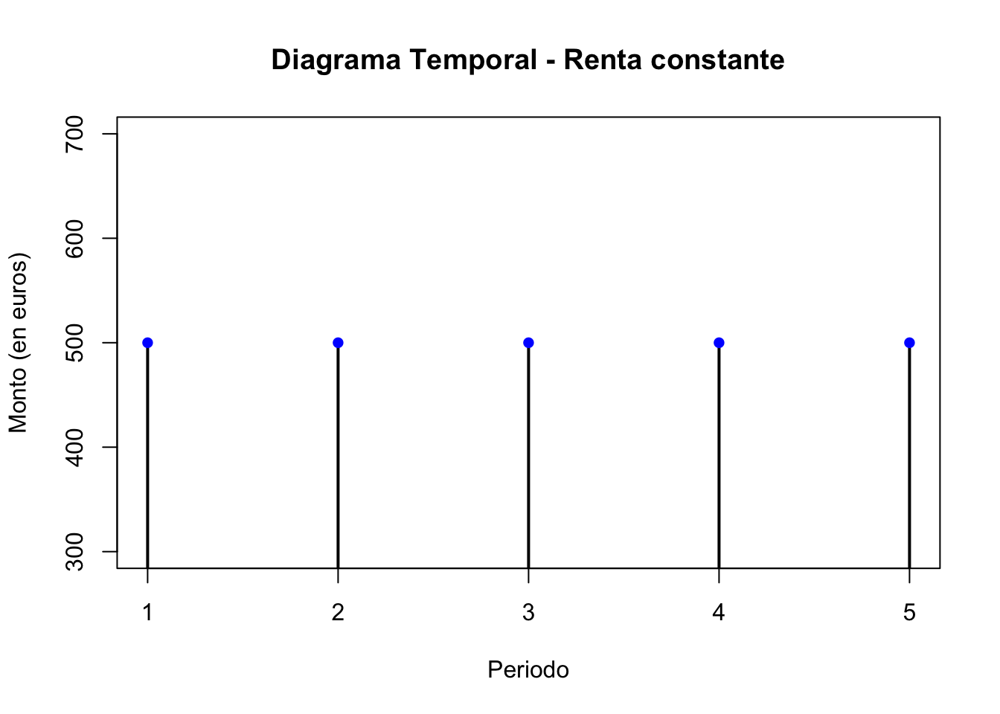
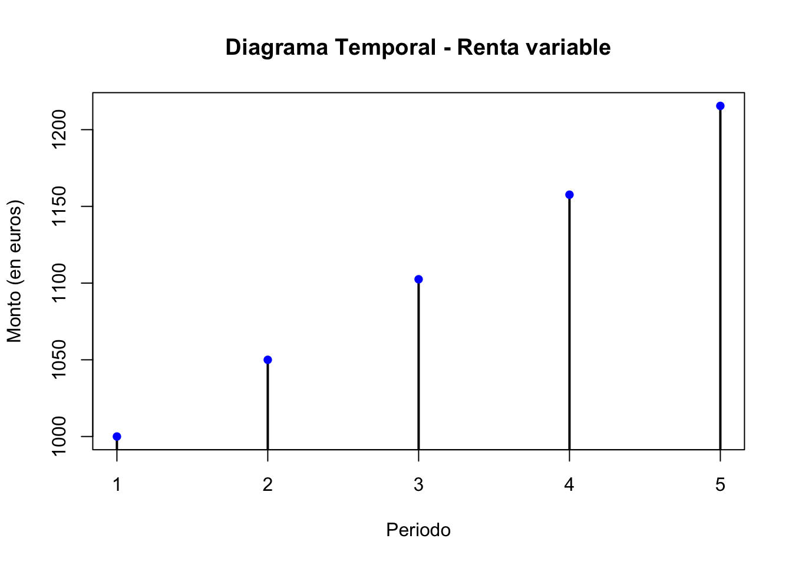

European Financial Advisor (EFA)™
Preparación avanzada con sesiones, ejercicios y simulacros resueltos
Alberto Bernat · Mediolanum Formación
Curso intensivo · Marzo – Junio 2025
Sesión 2: Módulo 1 – Parte I: Renta fija
Material de la sesión
Aquí puedes incluir los vídeos, enlaces y materiales descargables.
Rentas financieras
Concepto
Se aplica la herramienta del interés compuesto a la valoración de conjuntos de capitales financieros; más concretamente, por la amplia utilización que el mercado hace de ellas, se estudian las rentas financieras, al considerar que gran parte de las operaciones financieras están utilizando pagos o cobros periódicos en el tiempo, haciendo especial hincapié en los aspectos que afectan a su clasificación y a la valoración de rentas constantes.
Objetivos
Situar el flujo de cobros o pagos de una renta financiera en un diagrama temporal y clasificarlo
Calcular el valor actual y final de rentas constantes y variables
Teoría
Las rentas financieras son conjuntos de capitales financieros que involucran pagos o cobros periódicos en el tiempo. Estas rentas son ampliamente utilizadas en el mercado financiero y se basan en pagos o cobros periódicos, lo cual justifica su estudio y análisis.
La renta financiera está compuesta por dos elementos principales:
Términos de la renta: Estos son los distintos capitales financieros o pagos que componen la renta. Cada término representa una cantidad específica de dinero que se paga o se recibe en un determinado período de tiempo. Los términos pueden ser iguales o diferentes entre sí, dependiendo de la naturaleza de la renta. Por ejemplo, en una renta fija, los términos suelen ser iguales, mientras que en una renta variable pueden variar en cantidad.
Periodo de la renta: Es el plazo constante que separa dos términos consecutivos en la secuencia de pagos o cobros de la renta. Este período puede ser mensual, trimestral, anual u otra unidad de tiempo, dependiendo de cómo se haya establecido la frecuencia de los pagos o cobros de la renta. Es importante que el período sea constante para poder calcular de manera precisa el valor y la valoración de la renta.
Las rentas pueden ser clasificadas de acuerdo a diferentes criterios. Los principales son:
- Según la cuantía de los términos de la renta:
- Renta constante: cuando las cuantías de todos los términos son iguales.
- Renta variable: cuando las cuantías de los términos no son iguales.
- Según el número de términos de la renta:
- Renta temporal: cuando el número de términos es finito.
- Renta perpetua: cuando el número de términos es infinito.
- Según el periodo de la renta:
- Renta mensual, trimestral, anual, etc.
- Según el inicio del primer periodo de la renta:
- Renta inmediata: cuando el inicio del primer periodo de la renta coincide con el instante inicial de valoración.
- Renta diferida: cuando el inicio del primer periodo de la renta es posterior al instante inicial de valoración.
- Según el instante en que se hace efectiva la cuantía dentro de cada periodo:
- Renta postpagable o vencida: cuando la cuantía se hace efectiva al final de cada periodo.
- Renta prepagable o anticipada: cuando la cuantía se hace efectiva al inicio de cada periodo.
Al clasificar una renta nos interesará sobre todo identificar entre dos categorías principales:
Renta constante: En este tipo de renta, los pagos o cobros (términos) tienen un monto constante en cada periodo. La renta más típica sería un préstamo hipotecario concedido por el método de amortización francés (cuota constante).
Renta variable: En este caso, los pagos o cobros varían en cada periodo. Un ejemplo típico es el método de Gordon-Shapiro se utiliza para estimar el valor intrínseco de una acción en función de los dividendos esperados y las tasas de crecimiento.
Para comprender mejor una renta financiera, es útil representar el flujo de cobros o pagos en un diagrama temporal. Este diagrama muestra el eje horizontal como el tiempo y el eje vertical como el monto de los cobros o pagos.
Por ejemplo, una renta mensual de 500 euros durante un período de tiempo específico. En el diagrama temporal, los pagos se representan mediante líneas horizontales paralelas.

Por ejemplo, una renta que comienza con un pago de 1.000 euros y experimenta cambios en cada periodo, ya sea en aumento o disminución. En el diagrama temporal, los pagos se representan mediante líneas que varían en cada periodo.
Cálculos
Además de clasificar las rentas financieras, es fundamental calcular su valor actual y final en el contexto del interés compuesto.
El valor actual de una renta constante representa la suma de los pagos descontados en el momento presente, considerando una tasa de interés adecuada.
El valor final de una renta constante se refiere al monto acumulado al final de la serie de pagos. Estos cálculos se realizan utilizando fórmulas específicas que tienen en cuenta la tasa de interés, el monto de los pagos y el número de periodos.
Para calcular el valor de una renta y aplicar el concepto de interés compuesto, es habitual trabajar con tipos nominales y efectivos expresados en diferentes frecuencias (mensual, trimestral, anual). Es fundamental en este sentido utilizar el tipo de interés correspondiente a la frecuencia de los cobros y pagos asociados a la renta, a fin de obtener una valoración precisa y realista. Es decir, que debemos de reflejar adecuadamente la renta en función del periodo en el que se producen los flujos de caja (términos mensuales, por ejemplo) y el período del tipo de interés a aplicar (tendrá que ser mensual en este caso), asegurando así una evaluación precisa y acorde a la situación.
El valor actual representa la suma de los pagos descontados al presente, teniendo en cuenta una tasa de interés adecuada.
La fórmula general para calcular el valor actual de una renta constante es:
\[V_0=c\cdot\frac{1-\left(1+i\right)^{-n}}{i}\]
Donde,
\(V_0\), es el valor actual.
\(C\), es cuota o cuantía.
\(i\), es el tipo de interés.
\(n\), es el tiempo transcurrido.
Por otro lado, el valor final de una renta constante se refiere al monto acumulado al final de la serie de pagos.
La fórmula para calcular el valor final de una renta constante es: \[V_f=c\cdot\frac{\left(1+i\right)^{n}-1}{i}\]
Donde,
\(V_f\), es el valor final.
\(C\), es cuota o cuantía.
\(i\), es el tipo de interés.
\(n\), es el tiempo transcurrido.
Estas fórmulas son fundamentales para calcular el valor actual y final de una renta constante, lo cual permite evaluar la rentabilidad y viabilidad de operaciones financieras que involucran flujos de pagos o cobros periódicos en el tiempo.
Las fórmulas presentadas anteriormente son para calcular rentas postpagables, es decir, en las que los pagos se realizan al final de cada período. Sin embargo, es posible convertir una renta prepagable, en la que los pagos se realizan al inicio de cada período, en una renta postpagable cambiando el momento de los pagos.
Para una renta constante prepagable, el valor actual se calcula utilizando la fórmula:
\[V_0=c\cdot\frac{1-\left(1+i\right)^{-n}}{i}\cdot(1+i)^n\]
Y, el valor final:
\[V_f=c\cdot\frac{\left(1+i\right)^{n}-1}{i}\cdot(1+i)^n\]
La diferencia entre ambas fórmulas (perpagables y postpagables) radica en la presencia del factor \((1 + i)^n\) en la fórmula de la renta prepagable. Este factor tiene en cuenta los pagos anticipados realizados al inicio de cada período, lo cual afecta el valor actual de la renta.
Es importante entender la diferencia entre estos dos tipos de rentas para poder aplicar las fórmulas correctamente.
Por ejemplo, una renta postpagable se aplica a un préstamo en el cual se efectúan pagos periódicos después de cada período. En contraste, una renta prepagable se relaciona con un contrato de alquiler en el que se realizan pagos anticipados para asegurar el derecho de disfrute de la propiedad en períodos futuros.
Renta Fija
Concepto
Un activo de renta fija es un valor que representa una deuda para el emisor y que tiene una retribución que se fija, generalmente, por adelantado.
Un activo de renta fija es, por lo tanto, un valor que representa el derecho a recibir pagos periódicos o al final de la operación, prefijados y regulares en el futuro.
El emisor de un bono debe seleccionar las condiciones (fecha de emisión, fecha de vencimiento, tipo de interés, periodicidad de pago, etc.) que una vez fijadas no se pueden modificar. Por ese motivo este tipo de activos reciben el nombre de renta fija.
Características generales de la renta fija
Los elementos característicos de un título de renta fija son los siguientes:
Tipo de emisor: es aquel que obtiene la financiación del mercado y asume la obligación de pagar los cupones y devolver el principal. Puede ser público (administraciones públicas) o privado (bancos y empresas).
Valor Nominal (VN): Monto de la deuda contraída por el emisor con el suscriptor, comprador o tenedor del título.
Precio de emisión (Pe): Precio al que se emite y suscribe el título en el mercado primario.
Número de títulos emitidos (N): Unidades en las que se divide el empréstito.
Importe de la emisión (VN x N): Valor total de la emisión calculado multiplicando el valor nominal por el número de títulos emitidos.
Fecha de emisión: Fecha en la que se emite y pone en circulación el título de renta fija.
Fecha de vencimiento: Fecha en la que finaliza la vida del título y se debe devolver el valor nominal.
Cupón: Pago periódico de interés que se calcula como un porcentaje del valor nominal del título.
Frecuencia de pago: Periodo en el que se realiza el pago del cupón, que puede ser anual, semestral, al vencimiento, entre otros.
Amortización: Monto devuelto por el emisor al vencimiento o en fechas preestablecidas, generalmente como un porcentaje del valor nominal.
Rating: Calificación crediticia asignada al emisor o a la emisión de renta fija, que indica su calidad crediticia y nivel de riesgo.
Vencimiento: fecha en que se termina de repagar la totalidad de la deuda. En este momento el bono cesa.
Bono cupón cero: son aquellos instrumentos, emitidos al descuento, que no generan flujos intermedios (no pagan cupones). El rendimiento es el obtenido por la diferencia entre el precio de compra y el de venta o amortización del título.
TIR: rendimiento del instrumento a priori, que dependerá de las condiciones de mercado. No confundir con el cupón con la TIR, ya que el primero es fijo y la segunda dependerá del precio al que se adquiera el título.
TRE: Tasa de Rentabilidad Efectiva o rendimiento real obtenido después de realizar la inversión. Se calcula teniendo en cuenta los flujos de efectivo reales que se generan durante la vida de la inversión, incluyendo los ingresos y los desembolsos de efectivo. La rentabilidad efectiva refleja el rendimiento real de la inversión, teniendo en cuenta cualquier variación en los flujos de efectivo y las tasas de interés.
Estos elementos son importantes para comprender y evaluar los títulos de renta fija en términos de su emisor, valor, precio, pagos de intereses, fechas y riesgo crediticio.
Según el vencimiento del activo, los títulos de renta fija se pueden clasificar en dos categorías:
Activos monetarios: Son aquellos activos de renta fija cuyo vencimiento en el momento de la emisión se sitúa generalmente en torno a los dieciocho meses o en plazos inferiores. Estos activos suelen tener un plazo de vencimiento corto y se utilizan para cubrir necesidades de financiamiento a corto plazo. Ejemplos de activos monetarios son las Letras del Tesoro y los Pagarés de empresa.
Activos del mercado de capitales: Son activos de renta fija cuyo vencimiento en el momento de la emisión es superior a los dieciocho meses. Estos activos se emiten en plazos más largos y suelen formar parte del mercado de capitales. Los plazos típicos para estos activos son 3, 5, 10, 15, 20 y 30 años. Ejemplos de activos del mercado de capitales son los Bonos y Obligaciones del Estado.
La clasificación según el tipo de interés sería:
Activos con interés implícito:
- Activos al descuento: Son activos en los que el interés o rendimiento se obtiene a partir del diferencial entre el precio de suscripción o compra y el precio de venta o amortización. En estos activos, la amortización se realiza al valor nominal. Los ejemplos típicos son las Letras del Tesoro, los Pagarés de Empresa y los Bonos Cupón Cero (STRIPS).
Activos con interés implícito y explícito:
Los intereses explícitos que devenga un activo de renta fija se denominan cupones.
Activos con prima de emisión: Son activos en los que el interés total se compone tanto del diferencial de amortización o venta menos la suscripción o compra, como del pago de cupones periódicos. Estos activos se emiten a un precio inferior al valor nominal (bajo par).
Activos con prima de reembolso: Son activos de interés explícito en los que el valor de reembolso es superior al valor nominal. Además de los cupones periódicos, al vencimiento el inversor recibirá un monto superior al valor nominal (amortización sobre par).
Estructura del mercado de deuda pública
Activos que se negocian
Letras del Tesoro
Títulos a corto plazo.
Emitidos al descuento.
Representados por anotaciones en cuenta en la Central de Anotaciones de BdE.
La rentabilidad es la diferencia entre el valor nominal y el precio de adquisición pagado por el inversor.
Procedimiento de emisión mediante subasta española.
Bonos y obligaciones del estado
Títulos a largo plazo. Bonos a 3 y 5 años y Obligaciones a 10, 15 y 30 años.
Representados por anotaciones en cuenta en la Central de Anotaciones de BdE.
Pagan cupones anuales siendo reembolsables a vencimiento por su valor nominal.
Procedimiento de emisión mediante subasta española.
Miembros del mercado
El Tesoro
Cubrir las necesidades de endeudamiento del Estado al menor coste posible.
Mantener un adecuado grado de liquidez en el mercado.
Ofrecer a los inversores instrumentos financieros atractivos.
Banco de España
Agente financiero de la deuda pública.
Gestiona la Central de Anotaciones.
Supervisa el funcionamiento y la transparencia del mercado de Deuda Pública.
Entidades Gestoras
Llevan las cuentas de quienes no están autorizados a operar directamente a través de la central de Anotaciones.
Salvo que sean agencias de valores, pueden ser Titular de Cuenta.
Realizan funciones registrales, de compensación y liquidación y de custodia en relación al mercado de deuda pública.
Creadores de mercado
Entidades financieras cuyo objetivo es favorecer la liquidez del mercado secundario.
Cotizan sistemáticamente precios de compra y de venta y operan con unos volúmenes mínimos.
Mercado primario: procedimiento de emisión de los valores del Tesoro
El Tesoro español puede emitir Letras del Tesoro, Bonos y Obligaciones del Estado mediante dos métodos: sindicación u oferta pública.
Mercado secundario
La negociación en el mercado secundario se puede realizar a través de varios sistemas
Mercado de renta fija privada
En el mercado de renta fija privada se utilizan diferentes instrumentos, como:
- Pagarés de empresa
- Bonos convertibles
- Acciones preferentes
- Fondos de titulización de activos
Rating
El rating o solvencia crediticia conocido también como el riesgo de crédito (o de contraparte), se mide como la posibilidad de que el emisor de un bono no pueda hacer frente a los pagos de los cupones o del principal
Po lo tanto a través del rating podremos valorar el nivel de solvencia de un emisor y sus perspectivas futuras de pago. El rating proporciona un indicador de referencia del riesgo crediticio que soporta el inversor. Esta calificación se realiza por empresas independientes especializadas en el análisis de riesgos, siendo las principales Moody ́s, Standard and Poor ́s y Fitch.
Por lo general, cuanto mejor sea la calificación crediticia (rating) de un emisor o de una emisión, menor será la prima de riesgo del bono y, por lo tanto, menor será su rentabilidad exigida.
Otros riesgos asociados a la renta fija
La denominación de “renta fija” puede ser engañosa, ya que puede dar la impresión de que la rentabilidad está preestablecida y garantizada. Sin embargo, en realidad, lo que es fijo en una inversión de renta fija es el conocimiento previo de los montos, las fechas en que el emisor pagará los cupones y la devolución del principal. Sin embargo, debido a la variación de los tipos de interés en el mercado, el precio de un título de renta fija puede fluctuar al igual que cualquier otro activo financiero, subiendo o bajando.
Los riesgos potenciales asociados a la renta fija son:
• Riesgo de precio
• Riesgo de reinversión
• Riesgo de crédito
• Riesgo de inflación
• Riesgo de tipo de cambio
• Riesgo de amortización anticipada
• Riesgo de liquidez
En esta parte nos centraremos en los dos primeros, entendidos como el riesgo de tipo de interés:
El riesgo de precio es la principal fuente de incertidumbre a la que se enfrenta un inversor en productos de renta fija. Todos los productos de renta fija están sujetos a este riesgo.Ya que cuando el tipo de interés de mercado sube, el precio del bono baja.Y, viceversa, cuando el tipo de interés de mercado baja, el precio del bono sube.
El riesgo de reinversión aparece en aquellos activos de renta fija con rendimiento explícito y se refiere al hecho de que durante el transcurso de la vida de un bono, se asume la incertidumbre sobre la reinversión del importe cobrado del cupón. El cupón se reinvertirá en otro producto de renta fija que tendrá, muy probablemente, un tipo de interés superior o inferior al del producto en su momento inicial.
Relación precio-TIR: principios de Malkiel
La relación precio-TIR sigue los principios de Malkiel, que incluyen:
- El valor de un activo de renta fija varía en sentido inverso a su rentabilidad.
- Los activos con menor cupón experimentan mayores cambios de valor.
- Un incremento de la TIR supone una caída de precio inferior a la caída provocada por una disminución de la TIR.
Curva y estructura temporal de los tipos de interés (ETTI)
Concepto
La curva de tipos de interés es una herramienta importante en el mercado financiero que proporciona información sobre las rentabilidades de los activos de renta fija en relación con sus vencimientos. La curva se representa gráficamente trazando los rendimientos de los bonos con diferentes vencimientos. La estructura temporal de los tipos de interés, por su parte, muestra los rendimientos de los bonos cupón cero y se utiliza para analizar la relación entre los tipos de interés y los vencimientos.
El perfil de la curva de tipos de interés, o de un tramo de ella, puede ser plano, creciente o decreciente. Un perfil plano indica que los rendimientos son similares para todos los vencimientos, mientras que un perfil creciente indica que los rendimientos aumentan a medida que aumenta el vencimiento. Por el contrario, un perfil decreciente indica que los rendimientos disminuyen a medida que aumenta el vencimiento.
Es importante tener en cuenta que si hay cambios en las expectativas o variables relevantes, las curvas de tipos de interés se desplazan y modifican su perfil. Por ejemplo, si se espera que la inflación aumente, esto puede provocar un aumento en los tipos de interés a largo plazo y una pendiente más pronunciada en la curva. En general, la curva de tipos de interés es una herramienta valiosa para los inversores y analistas financieros que buscan entender las tendencias del mercado y tomar decisiones informadas sobre sus inversiones.
Teorías explicativas de la ETTI
La curva de tipos de interés muestra las rentabilidades de los activos de renta fija en relación con sus vencimientos. Existen diferentes teorías que explican cómo se forma la curva. La Teoría de la Preferencia por la Liquidez establece que la curva debe ser creciente, ya que los inversores prefieren invertir a corto plazo para poder convertir en liquidez los activos si es necesario. La Teoría de las Expectativas del Mercado indica que la curva se forma en función de las expectativas de los inversores sobre cómo evolucionarán los tipos de interés en el futuro. Finalmente, la Teoría del Hábitat Preferido sintetiza estas teorías y establece que la oferta y la demanda de activos financieros debe ajustar sus plazos según el “hábitat” en el que se encuentren, existiendo primas para aquellos vencimientos donde hay una demanda insuficiente. En general, estas teorías son útiles para entender las tendencias del mercado y tomar decisiones informadas sobre las inversiones.
Un desarrollo más amplio de las teorías explicativas de la estructura temporal de los tipos de interés (ETTI) sería:
De la Teoría de la Preferencia por la liquidez, se infiere que la curva de rendimientos de una inversión será siempre creciente en función del tiempo, ya que en principio un inversor preferirá invertir a corto plazo que a largo plazo, al poder conseguir convertir antes en liquidez los activos si así le fuera necesario.
La Teoría de las Expectativas del Mercado, enuncia que la ETTI se forma de manera exclusiva en función de las expectativas que tienen los potenciales inversores en relación a cómo van a evolucionar los tipos de interés en el futuro. Por tanto, la curva sería creciente cuando se espere que los tipos vayan a subir debido a que haya por ejemplo una elevada inflación, y sería descendente cuando la expectativa fuera de bajada de la inflación.
La Teoría del Hábitat Preferido, por su parte ha tratado de sintetizar estas teorías, estableciendo que el equilibrio de mercado obliga a que la oferta y la demanda de activos financieros debe ajustar sus plazos en cada momento, según el “hábitat” en el que nos encontremos, existiendo primas para aquellos vencimientos donde hay una demanda insuficiente, de tal manera que dichas primas serían las que inducirían a los inversores al abandono de sus hábitats preferidos, pasando de largo a corto plazo o viceversa.
Ejemplo ETTI
Si las cotizaciones actuales de los bonos cupón cero a 3,5 y 10 años es del 100% y sus valores de reembolso son: 115,76%, 127,63% y 162,89% respectivamente, ¿cuál será el perfil que adopte la ETTI?
Positiva.
Negativa.
Plana.
Exponencial.
La respuesta correcta es la c.
Para saber que el perfil adoptará la ETTI simplemente deberemos calcular el valor que toma la TIR de los 3 bonos cupón cero referidos y, ordenalos en función de su plazo de vencimiento. De forma que si el precio de un bono cupón cero viene dado por:
\[P_0(\%)=\frac{Reembolso(\%)}{(1+TIR)^{n}}\]
BONO 1
\[100=\frac{115,76}{(1+TIR)^{3}}=>TIR=5\%\]
BONO 2
\[100=\frac{127,63}{(1+TIR)^{5}}=>TIR=5\%\]
BONO 3
\[100=\frac{162,89}{(1+TIR)^{10}}=>TIR=5\%\]
luego, el perfil que adoptará la ETTI será plano ya que para los tres bonos la tasa interna de rentabilidad (TIR) a, 5 y 10 años es igual al 5%.
Medición y gestión del riesgo de tipo de interés
Sensibilidad
La sensibilidad es una herramienta valiosa para determinar cómo se comportará el precio de un bono ante pequeñas variaciones en la TIR. Es por tanto, una medida de riesgo en la gestión de activos de renta fija. Esta medida nos indica cuán “sensible” es el precio del bono (en términos absolutos, viene dada en unidades monetarias) a las fluctuaciones absolutas que se producen en los tipos de interés.
En escenarios de tipos de interés bajos, un bono con una sensibilidad mayor experimentará un aumento de precio más significativo si se produce una variación en la TIR.
Por otro lado, en escenarios de tipos de interés altos, un bono con una sensibilidad menor experimentará una disminución de precio menor si hay una variación en la TIR.
Sin embargo, como la sensibilidad refleja las variaciones de los precios en términos absolutos, no es adecuada para comparar bonos con diferentes precios y características. En este caso, se requiere un análisis de la duración de los bonos.
Para hallar la sensibilidad (o sensibilidad absoluta) ante cambios en el precio, calcularemos lo siguiente:
- La Duración de Macaulay
\[D=\frac{\sum_{t=1}^{n}\frac{F_t\cdot t}{\left(1+r\right)^t}}{P}\]
- La Duración corregida
\[D_{corregida}=\frac{D}{\left(1+TIR\right)} \]
- La propia sensibilidad
\[S= Duracion\,corregida \cdot \frac{Precio\,entero}{100}\]
Podemos usar la sensibilidad como una aproximación lineal del nuevo valor de un bono (\(P_1\)) ante una variación absoluta de la TIR (\(\Delta TIR\)) es:
\[P_1\simeq P_0 + ((-S)\cdot\Delta TIR)\]
Duración
La duración de Macaulay es una de las características más importantes que definen un bono. Los gestores de renta fija suelen utilizar esta medida debido a sus propiedades, ya que permite establecer relaciones fundamentales entre la estructura de un bono, su TIR y su precio.
La duración es la media de los periodos de pago de los flujos de un bono ponderados por el peso que representa el valor actual de los mismos en el precio del bono.
Duración de Macaulay (o simplemente Duración)
\[D=\frac{\sum_{t=1}^{n}\frac{F_t\cdot t}{\left(1+r\right)^t}}{P_0}\]
Donde,
\(D\), Duración de Macaulay expresada en años.
\(F_t\), Flujos a percibir por la tenencia de un bono (cupón y principal).
\(P_0\), es el precio entero de un bono o valor actual del mismo (\(V_0\)).
\(r\), es la TIR.
\(t\), es el tiempo hasta el vencimiento de cada uno de los flujos del bono.
Es por lo tanto, una media ponderada de la vida de un bono, es decir, la “vida media” del bono. La duración se expresa en unidades temporales, normalmente en años.
Propiedades de la Duración
De la expresión general para el cálculo de la duración, se puede deducir que un bono cupón cero (un solo flujo en la fecha de vencimiento) tiene una duración igual a su vencimiento.
La duración puede definirse también como una medida de la sensibilidad relativa de un bono. Es decir, relaciona las variaciones relativas del precio con las variaciones relativas de la TIR.
De forma que también podemos deducir que:
Ante previsiones de subidas en los tipos de interés, será más interesante para el inversor en renta fija invertir en bonos con una duración pequeña.
Ante previsiones de bajadas en los tipos de interés, será más interesante para el inversor en renta fija invertir en bonos con más duración.
Si relacionamos la duración con el vencimiento de un bono, manteniendo constante la estructura de los flujos y la TIR, podemos afirmar que en general: a mayor plazo de amortización, mayor duración.
Con una excepción: y es que para bonos bajo la par con vencimientos largos, el incremento de la duración a medida que aumenta el plazo de amortización, presenta un punto de inflexión a partir del cual se invierte la tendencia inicial.
De la relación entre la duración y la TIR, podemos deducir que: cuando aumenta la TIR, disminuye la duración.
De la relación entre la duración y la periodicidad de los cupones podemos extraer la siguiente propiedad: a mayor frecuencia en el pago de cupones menor duración. Ya que al aumentar la frecuencia en el pago de cupones disminuye la importancia relativa del último flujo, ya que el aumento de la frecuencia incrementa el valor actual de los cupones. Por lo tanto, este efecto se traduce en una disminución de la duración.
De la relación entre la duración y el paso del tiempo, y siempre que la TIR permanezca constante, se derivan dos propiedades muy importantes. La primera es:
Con el transcurso del tiempo, los plazos de los flujos del bono se hacen más pequeños y, por lo tanto, la duración también disminuye.
A medida que disminuye la vida pendiente de un bono, también disminuye su duración.
Duración corregida o modificada
Hemos visto, dos medidas que relacionan las variaciones del precio de un bono con las variaciones de su TIR:
La sensibilidad, donde la relación se da a través de magnitudes absolutas, con lo que existe el problema de comparar entre diferentes bonos.
La duración, donde la relación se realiza a través de magnitudes relativas, con lo que es posible la comparación para diferentes bonos.
En este caso, la problemática se produce en la interpretación económica de las magnitudes. Recordemos que la duración relaciona la variación relativa del precio con la variación relativa de la TIR, pero esta última, no tiene una fácil interpretación económica. Para relacionar los dos problemas, recurriremos al cálculo de la duración corregida, o duración modificada.
Matemáticamente su expresión es:
Duración corregida expresada en años
\[D_{corregida}=\frac{Duracion\,de\, Macaulay}{\left(1+TIR\right)}=\frac{D}{\left(1+TIR\right)} \]
- Si la queremos expresada en porcentaje
\[D_{corregida}=\frac{Duracion\,de\, Macaulay}{\left(1+TIR\right)}\cdot\frac{1}{100}\]
Cuando hablamos de volatilidad de los bonos u obligaciones nos estamos refiriendo a la sensibilidad de su precio de mercado con relación a los cambios que se produzcan en el tipo de interés de mercado (su rendimiento). Así que la podemos definir como la variación que se produce en el precio del bono con respecto a un incremento (o decremento) de cien puntos básicos (1%) de su rendimiento (TIR) hasta el vencimiento.
Duración corregida para estimar el efecto en precio de variaciones en la TIR
\[\frac{\Delta P}{P}\simeq \frac{P_1-P_0}{P_0}\simeq \left(-D_{corregida}\right)\cdot\Delta TIR\]
Alternativamente, la Duración corregida para estimar el efecto en precio de variaciones en la TIR la podemos expresar como,
\[P_1\simeq P_0\cdot\left[1+((-D_{corregida})\cdot\Delta TIR)\right]\]
Donde,
\(P_1\), es el precio estimado del bono ante una variación de la TIR.
\(P_0\), es el precio actual del bono .
\(D_{corregida}\), es la duración corregida.
Concretando, el precio de los bonos está inversamente relacionado a su rendimiento; la duración modificada actúa como un multiplicador dado que cuanto más grande sea, mayor será el impacto en el precio de los bonos ante un cambio de los tipos de interés; y, por último, para una duración modificada determinada, cuánto mayores sean las variaciones en el tipo de interés, mayor será el porcentaje de cambio en el precio.
Inmunización
El riesgo de tipo de interés es uno de los mayores riesgos a los que se enfrenta un inversor en renta fija, debido a su impacto en el precio y la reinversión de los cupones. Una subida de los tipos de interés reduce el valor del activo, mientras que una bajada de los tipos de interés implica una reinversión de los cupones a tipos más bajos. Los activos con rendimiento implícito no están expuestos al riesgo de reinversión.
El horizonte temporal de la inversión es el factor clave que determinará si el inversor prefiere que los tipos de interés suban o bajen. Si el horizonte temporal es corto, el efecto precio domina y el inversor preferirá que los tipos de interés bajen. Si el horizonte temporal es largo, el efecto reinversión es mayor y el inversor preferirá que los tipos de interés suban.
Para lograr la inmunización, es importante que la duración y el horizonte temporal de la inversión estén homogeneizados. La duración de Macaulay es una medida útil para evaluar la sensibilidad de los precios de los bonos a los cambios en las tasas de interés. La inmunización se logra haciendo coincidir la duración y el horizonte temporal de la inversión, lo que garantiza una rentabilidad mínima igual a la TIR inicial del bono.
Hay tres posibles situaciones al realizar una inversión:
Si la duración es igual al horizonte temporal, la cartera está inmunizada.
Si la duración es mayor que el horizonte temporal, el inversor deberá vender los activos al final del horizonte temporal y asumir un riesgo de precio.
Si la duración es menor que el horizonte temporal, la inversión no estará inmunizada y el inversor deberá hacer una nueva inversión asumiendo el riesgo de reinversión.
Resumen de fórmulas
Valoración de activos de renta fija a corto y a largo plazo
La valoración de un bono se realiza mediante la actualización de los flujos futuros a las tasas de interés exigidas por el mercado.
El rendimiento o la rentabilidad de un activo de renta fija se expresa anualmente a través del régimen de interés simple o del régimen de interés compuesto.
El régimen de interés simple se usará básicamente para el cálculo de las rentabilidades de los activos de renta fija a más corto plazo, es decir, para vencimientos inferiores o iguales al año natural (Letras del Tesoro y Pagarés de empresa).
Las bases de cálculo establecen la unidad de tiempo a la que se refiere un tipo de interés determinado. Por extensión se suele llamar base a la combinación de base y método de cálculo. Las bases más usuales son: la actual y 360 días.
El régimen de interés compuesto se usará fundamentalmente a través de la TIR para expresar la rentabilidad de un activo con interés explícito. También se utilizará para el cálculo del rendimiento de activos con interés implícito y vencimientos superiores al año natural.
El precio de los bonos y de las obligaciones (activos de renta fija a medio y largo plazo) es igual al valor presente de sus flujos de caja (cash flows) futuros, los cupones y el principal, descontados a un tipo de interés de mercado.
| Método | Base | Régimen de interés | Tipo de interés |
|---|---|---|---|
| Mercado monetario | Hasta 1 año | Actual/360 | Simple |
| Más de 1 año | Actual/360 | Compuesto | |
| Mercado de capitales | Siempre | Actual/Actual | Compuesto |
Las dos formas de expresar el valor de un activo de renta fija, el valor actual y la TIR, son herramientas importantes en la valoración y análisis de inversiones en este tipo de activos.
Valor Actual (\(P_0\)): Se determina aplicando una tasa de descuento o tasa esperada de rendimiento al flujo de efectivo esperado del activo. Este valor actual representa el precio esperado del activo.
Tasa Interna de Rendimiento (TIR): Se calcula utilizando el precio de mercado del activo o su valor actual. La TIR es la tasa de retorno esperada del activo, es decir, la tasa que iguala el valor actual del flujo de efectivo del activo con su precio de mercado.
Casos particulares en la valoración de un bono:
Cálculo del precio de un bono con pago de cupones no anuales:
Se calcula el valor presente de cada cupón teniendo en cuenta el plazo y la tasa de descuento adecuada.
Se suma el valor presente de los cupones y el valor presente del valor nominal para obtener el precio del bono.
Cálculo del precio de un bono con pago de cupón anual en una fecha cualquiera:
Se calcula el tiempo hasta la fecha de pago del cupón y se aplica la tasa de descuento correspondiente para obtener el valor presente del cupón. Deberemos tener muy en cuenta la fracción de año que falta para el pago del primer cupón.
Se suma el valor presente de los cupones y el valor presente del valor nominal para obtener el precio del bono.
Cálculo del precio de un bono considerándolo como una renta:
Se calcula el valor presente de los flujos de efectivo generados por los cupones y el valor nominal a lo largo de la vida del bono. Podemos considerar el pago de cupones periódicos como una renta constante, y la amortización del principal, como un bono cupón cero.
Se suma el valor presente de los flujos de efectivo para obtener el precio del bono.
Cálculo del precio de un bono cupón cero:
Se calcula el valor presente del valor nominal utilizando el mismo procedimiento (actualización de los flujos del bono), sólo que se simplifica al calcular el valor actual de un solo flujo.
El precio del bono cupón cero es igual al valor presente del valor nominal.
Precio ex-cupón y cupón corrido:
El precio ex-cupón de un bono, es la diferencia entre el precio entero y el cupón corrido del bono. En la mayoría de los mercados secundarios de renta fija, los activos cotizan en precio ex-cupón.
El cupón corrido es el interés devengado del próximo cupón. Se calcula como una ponderación simple del próximo cupón.
El precio entero es lo que efectivamente vale el bono y, por lo tanto, el resultado de la actualización de los flujos del bono a la TIR de mercado.
Resumen
La relación entre el precio de un bono, el cupón y la TIR
| Con Prima | Emisión de Bonos | Con Descuento |
|---|---|---|
| Sobre la par | A la Par | Bajo La par |
| Rentabilidad (-) implícita | Rentabilidad = % Cupón | Rentabilidad (+) implícita |
| TIR < Cupón | TIR = Cupón | TIR > Cupón |
| P > VN | P = VN | P < VN |
Si el precio del bono es igual a su valor nominal, la TIR será igual al cupón. Esto significa que el rendimiento del bono será igual al cupón que se paga.
Si el precio del bono es mayor que su valor nominal, la TIR será menor que el cupón.
Si el precio del bono es menor que su valor nominal, la TIR será mayor que el cupón.
La relación entre tipos de interés del mercado y los precios de los bonos
| TIPOS | PRECIO | TIR |
|---|---|---|
| Si ↑ t/ i | ↓ Precio bono | ↑ TIR |
| Si ↓ t/ i | ↑ Precio bono | ↓ TIR |
Para hacer la valoración de activos de renta fija, en la mayoría de casos, y especialmente cuando tengan cupón corrido, utilizamos la CALCULADORA FINCIERA CASIO FC 200V
Precio/TIR/CC => CASIO FC 200V (función BOND)
TRE => calculamos sin emplear ninguna función financiera
Descripción de los distintos precios de los bonos cuando hay cupón corrido:
Precio Entero: Es el precio cotizado en el mercado para un bono, incluyendo el valor del cupón corrido.
Precio Sucio: También conocido como “Precio Ex cupón”, es el precio de un bono sin incluir el valor del cupón corrido. Es el precio al que se negocia el bono en el mercado secundario sin tener en cuenta los intereses acumulados.
Precio Efectivo: Es el precio limpio del bono, es decir, el precio sin incluir el valor del cupón corrido.
Analíticamente y con los distintos nombres que podemos encontrar, tenemos:
| NOMBRE | COMPOSICIÓN |
| Precio Entero = | Precio cotización + Cupón Corrido |
| Precio Sucio = | Precio Ex cupón + Cupón Corrido |
| Precio Efectivo = | Precio Limpio + Cupón Corrido |
En la calculadora Casio FC 200V, las variables se definen mediante:
| VARIABLE | TRADUCCIÓN |
|---|---|
| PRC | Precio ex cupón, limpio o de cotización |
| INT | Cupón corrido |
| CTS | Precio entero, sucio o coste efectivo |
Cálculos
Tipos de interés spot y forward
- Para periodos inferiores al año, capitalización simple (a 6 meses dentro de 6):
\[(1+_{0}S_{12} \cdot \frac{12 }{12 })=(1+_{0}S_{6} \cdot \frac{6 }{12 })\cdot(1+f_{6,12}\cdot \frac{6 }{12 })\]
- Para periodos superiores al año, capitalización compuesta (a 1 año dentro de un año):
\[(1+_{0}S_{2})^{2}=(1+_{0}S_{1})^1\cdot(1+f_{1,2})^1\] Donde,
\(_{0}S_{1}\), es el tipo spot o de contado; el subíndice que aparece a la derecha nos indica el momento en que dicho interés está vigente y, el de la derecha, el número de periodos de vigencia.
\(f_{1,2}\), es el tipo forward obtenido a partir de los tipos spot; el subíndice nos indica el periodo en que dicho interés estará vigente.
Ejercicios para practica los tipos de interés implícitos o forward
Precio de un activo de Renta Fija (interés implícito)
- Mercado monetario (Hasta 1 año, capitalización simple)
\[P_0=\frac{100}{\left(1+i\cdot\frac{Actual}{360}\right)}\]
- Mercado monetario (Más de 1 año, capitalización compuesta)
\[P_0=\frac{100}{(1+i)^{Actual/360}}\]
donde,
\(P_0\), es el precio del activo, expresado en porcentaje sobre el nominal.
\(i\), es el tipo de interés.
\(Actual\), es el número de días que ha mantenido el inversor el activo en su poder.
Precio de un activo de Renta Fija (interés explícito)
\[P_0=\frac{C_1}{(1+TIR)}+\frac{C_2}{(1+TIR)^2}+\ ... \ +\frac{C_t}{(1+TIR)^t}\]
Donde,
\(P_o\), es el precio o valor actual
\(C_t\), es el cupón en el momento \(t\)
\(TIR\), es la tasa de descuento o TIR
La Tasa Interna de Rentabilidad (TIR) es una medida de rentabilidad a priori que estima anticipadamente el rendimiento de una inversión. Se calcula considerando los flujos de efectivo futuros y el desembolso inicial de la inversión. La TIR asume que los flujos de efectivo se reinvierten a una tasa constante y se basa en la suposición de una curva de tipos de interés plana.
Tasa de rentabilidad efectiva (TRE, o rentabilidad efectiva o a posteriori)
\[P_f=P_0 \cdot \left(1+{TRE}\right)^t\]
Donde,
\(P_f\), es el precio final o valor final
\(P_o\), es el precio o valor actual
\(TRE\), es la rentabilidad efectiva o TRE
Por otro lado, la Tasa de Rentabilidad Efectiva (TRE) es el rendimiento real obtenido después de realizar la inversión. Se calcula teniendo en cuenta los flujos de efectivo reales que se generan durante la vida de la inversión, incluyendo los ingresos y los desembolsos de efectivo. La rentabilidad efectiva refleja el rendimiento real de la inversión, teniendo en cuenta cualquier variación en los flujos de efectivo y las tasas de interés.
Cada una de estas medidas de rentabilidad tiene su utilidad y se utiliza en diferentes etapas de la evaluación y seguimiento de una inversión de Renta Fija. La TIR es útil para estimar el rendimiento potencial de una inversión antes de realizarla, mientras que la rentabilidad efectiva proporciona una medida más precisa del rendimiento real después de la inversión.
Ambas medidas son importantes para tomar decisiones informadas sobre inversiones y evaluar su desempeño ya que, en la medida en que el tipo de interés al que se podrán reinvertir los cupones no coincida con la TIR, su rentabilidad efectiva (TRE) en el vencimiento diferirá de esa TIR.
El cupón corrido representa el valor proporcional del próximo pago de cupón que se paga al comprador del bono si la fecha de compra es posterior a la fecha de pago del cupón anterior.
Cálculo del cupón corrido
\[CC=\frac{D_c}{D_t}\cdot C\]
Donde,
\(CC\), es el cupón corrido.
\(D_{c}\), es el tiempo, en días, transcurrido desde el pago del último cupón.
\(D_{t}\), es el tiempo, en días, que transcurre entre el pago de dos cupones consecutivos (días totales de devengo del cupón).
\(C\), es el importe del cupón que se paga periódicamente.
Ejemplos de valoración
- Un bono cupón cero adquirido por 88,333%, con vencimiento a 4 años. ¿Indique cuál de las siguientes afirmaciones es correcta?:
Su TIR es del 3,15%
La TRE es del 3,15%
La rentabilidad acumulada al vencimiento es del 11,667%
Todas las respuestas son correctas.
Calculamos la TIR del bono como un descuento en capitalización compuesta:
\[P_0=\frac{100\ (reembolso \ del \ 100\%)}{\left(1+TIR\right)^n}\] de forma que, \[88,333=\frac{100}{\left(1+TIR\right)^4}\]
si resolvemos por la TIR, tenemos
\[TIR=0.0315(3,15\%)\]
En el caso de la TRE, empleamos su fórmula,
\[C_4=C _0\cdot (1+TRE)^4\] al sustitur
\[100=88.333\cdot (1+TRE)^4\] tenemos que
\[TRE=0.0315(3,15\%)\]
La TIR coincidirá con la TRE ya que no hay flujos de caja que hayan de ser reinvertidos. De forma que el riesgo, derivado de la incertidumbre sobre el tipo de interés, al que se reinvertirán los cupones, se elimina ya que se aplica la TIR desde el inicio de la inversión y hasta el final de la misma:
\[TIR=TRE=0.0315(3,15\%)\]
Finalmente, calculamos la rentabilidad acumulada del periodo como:
\[r_{\left(acumulada\:a\:vencimiento\right)}=100\%-88.333\%=11.667\%\]
- El 19 de noviembre de 2016 se compra un bono que vence, exactamente, dentro de tres años. Hemos pagado un 102,35% de su nominal, con una TIR del 4,39% y paga un cupón anual del 5,25%. Si el inversor tiene una política de reinversión de los dividendos y teniendo en cuenta el siguiente esquema de tipos de interés para depósitos a un año, ¿cuál es la tasa de rentabilidad efectiva (TRE) de esta inversión a la fecha de vencimiento?
| Años | Tipos de interés para depósitos a un año |
|---|---|
| 19-11-17 | 3,00% |
| 19-11-18 | 2,25% |
| 19-11-19 | 1,25% |
a. 4,30%
b. 4,42%
c. 4,25%
d. Ninguna de las anteriores.
Recordemos que la Tasa de Rentabilidad Efectiva (TRE) se define como aquella rentabilidad media anual que tiene en cuenta las tasas de reinversión de los ingresos de una operación, medida mediante capitalización compuesta. Y su expresión es la siguiente:
\[V_f=V_0\left(1+i_{TRE}\right)^n\]
De forma que necesitaremos el valor final de la inversión (que lo calculamos), el valor inicial o precio (es un dato en este caso). De manera, que para hallar cual será el valor al final de la inversión teniendo en cuenta la reinversión a los tipos que nos dan, calculamos primero todos los flujos, esto es, de las cuatro inversiones realizadas:
\[V_f=5.25\left(1+0.03\right)\left(1+0.0225\right)+5.25\left(1+0.0225\right)+105.25\] \[V_f=116.14729\]
Una vez que ya conocemos el valor final \(V_f\) y el valor inicial \(V_0\), planteamos la fórmula de la TRE y resolvemos por el tipo de interés \(i_{TRE}\):
\[V_f=V_0\left(1+i_{TRE}\right)^n\]
Donde,
\[i_{TRE}=\left(\frac{V_f }{V_0}\right)^{\frac{1 }{n }}-1\]
Que al sustituir y calcular, obtenemos un resultado de:
\[i_{TRE}=\left(\frac{116.14729}{102.35}\right)^{\frac{1}{3}}-1=0.04305(4.3\%)\]
- Si 1 de marzo de 2025 se compró un bono con cupón del 4,25% emitido el 1 de marzo de 2024 que vence el 28 de febrero de 2028. Si en activos similares el mercado se mueve en rentabilidades del 3,50% el precio en porcentaje sobre el nominal es aproximadamente:
100%
100,75%
102,11%
102.75%
En este caso nos piden calcular el precio, pero NO indica de qué precio se trata, si es el precio entero (o sucio), o por el contrario el precio excupón (o de cotización); luego eso puede generar dudas. No obstante, si nos fijamos en este caso concreto a pesar de darnos fechas concretas (y NO términos) ambos precios coinciden (PS=PL), ya que no existe cupón corrido debido a que la adquisición del título se lleva a cabo justo en el momento del pago del 1 er cupón (1).
Por otra parte, hay que recordar que se coge la fecha de compra para el cálculo, y NO la fecha de emisión …ya que no se adquiere en la emisión como ya se ha comentado, sino que es adquirido justo al finalizar el primer año (comienzo del segundo año). Luego si lo resolvemos con la calculadora financiera Casio FC200V tenemos que:
Función: “BOND”
SET: “Annu/Date”
d1 = 01032025+ EXE
d2 = 28022028 + EXE
RDV = 100 + EXE
CPN = 4,25 + EXE
PRC = 0 + EXE
YLD = 3,5% + EXE
Ahora, con el cursor, volvemos sobre “PRC” y pulsamos “SOLVE”.
Resultado:
PRC = - 102,11% (precio: excupón, o de cotización)
INT = - 0,00 (cupón corrido)
CTS = - 102,11% (precio entero o sucio)
- Sea una emisión de pagarés a 18 meses con precio de emisión de 43.937 euros y 50.000 euros de valor nominal. Si seis meses después los pagares cotizan a 45.000 euros, ¿cuál es el tipo de interés al que están cotizando los pagarés en este momento?
9%.
Menor del 9%.
Superior al 9%.
No puede saberse con estos datos.
La respuesta correcta es la c.
Con los datos del enunciado,
\(P_0=45000\)
\(Nominal= 50000\)
\(n=12 \ meses\)
y la fórmula del precio de un pagaré/letra,
\[P_o=\frac{N}{\left(1+i\cdot \frac{n}{12}\right)}\] bastará con susutituir y despejar el tipo de interés implícito,
\[45000=\frac{50000}{\left(1+x\cdot \frac{12}{12}\right)}\] para obtener tipo de interés al que están cotizando los pagarés en este momento
\[i=0.1111(11,11\%)\]
- ¿Cuál es el precio de una Letra del Tesoro comprada en el mercado secundario con un tipo de interés implícito del 2,066% y faltando 225 días para su vencimiento?
98,725%.
98,505%.
98,630%.
98,850%.
La respuesta correcta es la a.
Empleamos la fórmula del precio de una letra, en capitalización simple y base 360:
\[P_0=\frac{100}{\left(1+i\cdot \frac{d}{360}\right)}\]
donde al sustituir y calcular
\[P_0=\frac{100}{\left(1+\:0.02066\cdot \frac{225}{360}\right)}\] tenemos un resultado de
\[P_0=98.725\% \]
- ¿Cuál es el precio entero (precio efectivo) de un bono del Estado el día 18/12/2021, sabiendo que su cotización (precio ex cupón) es 101,275%, que paga cupones constantes anuales del 3,20% y que su vencimiento es el 31/1/2025?
101,661%
98,461%
101,275%
104,089%
Para resolver esta pregunta hemos de calcular el cupón corrido y sumarlo a su precio de cotización (o precio ex cupón) que es conocido e igual a 101,275%. Por tanto, planteamos la fórmula del cupón corrido,
\[CC=\frac{D_c}{D_t}\cdot C\]
donde,
\(CC\), es el cupón corrido.
\(D_{c}\), es el tiempo transcurrido desde el pago del último cupón.
\(D_{t}\), es el tiempo que transcurre entre el pago de dos cupones consecutivos
\(C\), es el importe del cupón que se paga periódicamente.
Ahora debemos realizar el cálculo para conocer el tiempo (en días) que ha transcurrido desde el pago del último cupón hasta la fecha presente (18/12/2021), y para ello sabemos que la próxima fecha del cupón que se paga periódicamente es el 31/1/2022 (ya que el vencimiento es el 31/1/2025).
Por tanto calculamos su diferencia, sabiendo que desde el 18/12/2021 al 31/1/2022 van 43 días más el día corriente. Es decir 44 días, luego habrán transcurrido un total de 321 días (365-44) desde que se cobrara el último cupón.
Lo que implica que el cupón devengado y no cobrado es un rendimiento implícito que acumula este bono a la fecha de su valoración.
Ahora sustituimos en la fórmula y calculamos,
\[CC=\frac{321}{365}\cdot 0.032=0.02814(2.82\%)\] Luego, el precio efectivo será la suma del precio ex cupón más el cupón corrido,
\[P_{efectivo}=101.275\%+2.814\%=104.089\%\]
🧾 Fiscalidad de los rendimientos de renta fija
En el caso de personas físicas, los rendimientos generados por activos de renta fija, ya sean explícitos (intereses o cupones) o implícitos (rendimiento generado en el reembolso o transmisión), se consideran rendimientos del capital mobiliario y se integran en la base imponible del ahorro del IRPF.
- Los rendimientos explícitos tributan por el importe íntegro percibido (por ejemplo, intereses o cupones).
- Los rendimientos implícitos tributan por la diferencia entre el valor de transmisión o reembolso y el valor de adquisición, teniendo en cuenta los gastos inherentes a la operación.
La tributación de estos rendimientos se realiza conforme a una escala progresiva aplicable a la base liquidable del ahorro, que detallamos a continuación.
Retención en origen
Los rendimientos del capital mobiliario están sujetos a una retención a cuenta del 19 %.
Excepciones:
- En el caso de las Letras del Tesoro, no se aplica retención.
- En la venta de valores de renta fija antes del vencimiento, los intereses devengados (cupones corridos) sí están sujetos a retención.
💰 Gravamen de la base liquidable del ahorro
Normativa aplicable: Artículo 66.2 de la Ley del IRPF.
A la base liquidable del ahorro se le aplicará la siguiente escala progresiva. Esta estructura combina cuotas fijas acumuladas con un tipo marginal sobre el exceso en cada tramo:
Escala estatal del ahorro (IRPF)
| Base liquidable hasta (€) | Incremento en cuota íntegra (€) | Resto base liquidable del ahorro hasta (€) | Tipo aplicable (%) |
|---|---|---|---|
| 0 | 0 | 6.000 | 19 |
| 6.000,00 | 1.140 | 44.000 | 21 |
| 50.000,00 | 10.380 | 150.000 | 23 |
| 200.000,00 | 44.880 | 100.000 | 27 |
| 300.000,00 | 71.880 | En adelante | 28 |
🧮 Cálculo de la cuota íntegra del ahorro
El cálculo se realiza aplicando una cuota fija acumulada más un porcentaje marginal sobre el exceso dentro del tramo correspondiente.
Ejemplo: Si la base liquidable del ahorro es de 250.000,00 €, se encuentra en el cuarto tramo, y el cálculo sería:
\[ \text{Cuota íntegra} = 44.880 + (250.000 - 200.000) \times 0,27 \]
\[ \text{Cuota íntegra} = 44.880 + 50.000 \times 0,27 = 44.880 + 13.500 = 58.380 \]
Ejercicios tipo test
- Si la duración de una cartera de renta fija es de 6,5 y el horizonte temporal del inversor es de 5 años, podemos afirmar que:
Nada de ello puede inferirse
El inversor está asumiendo un menor riesgo de precio con relación a una cartera perfectamente inmunizada.
La cartera esta perfectamente inmunizada.
Para inmunizar es necesario reducir la duración de la cartera.
La respuesta correcta es la d.
La inmunización busca igualar la duración de la cartera con el horizonte temporal del inversor para conseguir que el valor final de la inversión sea el previsto al inicio.
- Dado un bono cupón cero que cotiza a la par, con vencimiento a 2 años y rentabilidad del 3%, ¿cuál será su duración?
2
1
1.5
No se dan datos suficientes para contestar la pregunta.
La respuesta correcta es la a.
De la expresión general para el cálculo de la duración, se puede deducir que un bono cupón cero (un solo flujo en la fecha de vencimiento) tiene una duración igual a su vencimiento.
- El bono A tiene una duración de 5 y el bono B de 8.75. Los dos cotizan a una TIR del 1.75%. Si se produce una subida de la TIR (homogénea para todos los tramos de la curva) del 0.25%.
El precio del bono A bajará un 1.23%
El precio del bono B bajará un 2.15%
El precio del bono A se verá menos afectado que el del bono B.
Todas las respuestas son correctas.
La respuesta correcta es la d.
Calculamos la variación relativa del precio del bono A y del B, para ello empleamos la siguiente fórmula:
\[\frac{\Delta P}{P}\simeq \frac{P_1-P_0}{P_0}\simeq \left(-D_{corregida}\right)\cdot\Delta TIR\] donde la Duración Corregida (\(D_C\)), se obtiene tras dividir la Duración entre uno más la TIR:
\[D_{corregida}=\frac{D}{\left(1+TIR\right)}\] Así, podemos calcular para el bono A:
\[\frac{\Delta P}{P}\simeq-\left[\frac{5}{\:\left(1+0.0175\right)}\right]\cdot 0.25\simeq-1.22850\simeq-1.23\%\] Y, para el bono B tenemos que:
\[\frac{\Delta P}{P}\simeq-\left[\frac{8.75}{\:\left(1+0.0175\right)}\right]\cdot 0.25\simeq-2.14987\simeq -2.15\%\]
Por el segundo principio de Malkiel una variación dada en la TIR de un bono, cuanto mayor sea el plazo hasta su vencimiento, mayor será su variación en el precio.
De forma que, si se produce una subida de la TIR (homogénea para todos los tramos de la curva) del 0.25%, podemos afirmar que las tres repuestas (a, b y c) son correctas.
- Respecto a la duración y el concepto de inmunización, determine cuál de las siguientes afirmaciones es correcta:
Dado un bono cuya duración es menor que el horizonte temporal, el incremento en su TIR supondrá una bajada en el rendimiento total de la inversión.
Dado un bono cuya duración es mayor que el horizonte temporal, el incremento en su TIR supondrá una bajada en el rendimiento total de la inversión.
Si la duración y el horizonte temporal del bono coinciden, no se puede predecir el impacto de un movimiento en la TIR.
En una cartera inmunizada, la rentabilidad no depende de variaciones en la duración de los bonos que la componen.
La respuesta correcta es la b.
Cuando la duración es menor que el horizonte temporal de la cartera (D > HT), diremos que el riesgo de reinversión domina sobre el riesgo de precio, con lo que la rentabilidad efectiva de la cartera aumentará a medida que se incrementan los tipos de interés, y viceversa. (a es incorrecta)
Cuando la duración es mayor que el horizonte temporal de la cartera (D > HT), el riesgo de precio domina al riesgo de reinversión, con lo que la rentabilidad efectiva de la cartera disminuirá a medida que aumenten los tipos de interés, y viceversa. (b es correcta)
Cualquier alteración de los tipos de interés modifica la duración de la cartera. De esta forma, aunque la duración y el horizonte temporal del bono coincidan (inmunizado), SÍ se puede predecir el impacto de un movimiento en la TIR calculando la duración corregida del bono en cuestión.
La inmunización es una técnica que exigirá reequilibrar permanentemente la cartera para mantener la igualdad entre horizonte temporal y duración, a causa de las variaciones de la duración de los bonos que la componen, pero también a causa de posibles cambios en el horizonte temporal, lo que, en realidad, limita su aplicación.(d es incorrecta)
- Suponga un bono con TIR del 4%, plazo de cinco años y cupones anuales del 3.5% pagaderos el 31 de diciembre de cada ejercicio. Determine cuál de las siguientes afirmaciones es falsa:
Un aumento de la TIR supondrá una disminución de la duración.
Si, en lugar de pagar los cupones anualmente, lo hiciera semestralmente, su duración sería menor.
El día 1 de enero la duración será mayor que el día 30 de diciembre del ejercicio anterior.
El día 1 de enero el bono tendrá una duración menor que el día 30 de junio del mismo ejercicio.
La respuesta correcta es la d.
Cuando aumenta la TIR, disminuye la duración (a, es verdadera).
A mayor frecuencia en el pago de cupones menor duración (b, es verdadera).
A mayor plazo de amortización, mayor duración. El corte del cupón (pago del cupón) provoca un aumento de la duración del bono. Se da la paradoja que justamente el día 1 de enero, a pesar de haber transcurrido tan solo un día respecto al 31 de diciembre (pago/cobro del cupón), y que por tanto, el pazo a vencimiento será menor, la duración aumenta en lugar de reducirse. Esto se debe a la proximidad o lejanía al pago del cupón que al estar muy próximo el pago del cupón y, por tanto, haber mayor cupón corrido, la duración es menor. Por el contrario, si está lejano el pago del próximo cupón, el cupón corrido es reducido y la duración es mayor (c es verdadera).
La respuesta d, a priori debería ser verdadera ya que a menor plazo de amortización, menor duración (ya que desde el mes de enero hasta el mes de junio del mismo ejercicio, lógicamente se reduce el plazo de amortización en 5 meses). Dicho de otro modo, el día 1 de enero la duración debería de ser “mayor” que el día 30 de junio del mismo ejercicio.
Sin embargo esto, no siempre es así. Para bonos que cotizan bajo la par con vencimientos largos, el incremento de la duración a medida que aumenta el plazo de amortización, presenta un punto de inflexión a partir del cual se invierte la tendencia inicial.
Veamos, en el caso de nuestro bono, si cotiza bajo par:
\[TIR > Cupón => Precio < 100\%\] Luego por propiedades, sabemos que como cotiza bajo par y el vencimiento no es corto (5 años), de forma que la respuesta d es falsa. Si bien para determinarlo con mayor precisión debemos antes calcular su duración para ambos momentos del tiempo.
- Determine cuál de las siguientes afirmaciones respecto a la sensibilidad de un bono NO es correcta:
La sensibilidad nos permite aproximar cuál será el impacto en el precio del bono de variaciones en la TIR.
La sensibilidad nos permite establecer con exactitud cuál será el nuevo precio de un bono, si la TIR cambia.
Desde un punto de vista del precio, si esperamos bajadas en los tipos de interés, buscaremos bonos con sensibilidad alta.
La duración de un bono es una medida de sensibilidad de éste.
La respuesta correcta es la b.
La sensibilidad de un bono es una medida que relaciona las variaciones absolutas del precio de un bono con las variaciones absolutas de su TIR. Por lo tanto, la sensibilidad nos proporciona información en términos absolutos acerca de cual será la variación del precio de un bono.
La sensibilidad nos permite aproximar cuál será el impacto en el precio del bono ante variaciones en la TIR.
Ante la misma variación de tipos de interés del mercado, la mayoría de los productos de renta fija que vencen más tarde son más sensibles en precio. Por el contrario, los bonos y productos de renta fija que vencen más pronto tienen normalmente una menor sensibilidad en precio.
La duración es la media de los periodos de pago de los flujos de un bono ponderados por el peso que representa el valor actual de los mismos en el precio del bono. La duración puede definirse también como una medida de la sensibilidad relativa de un bono. Es decir, relaciona las variaciones relativas del precio con las variaciones relativas de la TIR.
- ¿Qué variación porcentual estima que tendrá el precio de un bono, suponiendo las siguientes características y que la TIR experimenta una subida de 100 p.b.?
| Datos: |
|---|
| Precio entero: 104,00 |
| Duración: 14,3 |
| TIR actual: 5,25% |
14,30%
13,59%
-13,59%
-14,30%
La respuesta correcta es la c.
En primer lugar vamos a recordar la fórmula de la duración de Macaulay (o simplemente la “duración”):
\[D=1\cdot\frac{F_1\cdot\left(1+TIR\right)^{-1}}{P}+2\cdot\frac{F_2\cdot\left(1+TIR\right)^{-2}}{P}+.....+n\cdot\frac{F_n\cdot\left(1+TIR\right)^n}{P}\]
Que, en este caso, es un dato que nos dan en el enunciado del ejercicio:
\[D=Duración\ de\ Macaulay=14.3\]
En segundo lugar, vamos a calcular la duración corregida \(D.C.\) (también conocida como duración modificada o de Hicks), a partir de la duración de Macaulay \(D\).
\[D.C.=\frac{D}{(1+TIR)}=\frac{14.3}{(1+0.0525)}=13.59\%\]
Y, en tercer y último lugar, calculamos la variación en el precio ante un aumento de la TIR de 100 p.b.(recordad, cada punto porcentual contiene 100 puntos básicos):
\[\frac{\Delta\ P}{P}=-D_{corregida}\cdot\Delta TIR=(-13.59\%)\cdot 1\%=-13.59\% \]
Notesé que también cabe la posibilidad de realizar los calculos anteriores en tantos por uno, en lugar de hacerlo en tantos por cien. De forma análoga, serían:
\[D.C.=\frac{D}{(1+TIR)}\cdot \frac{1}{100}=\frac{14.3}{(1+0.0525)}=0.1359\] \[\frac{\Delta\ P}{P}=-D_{corregida}\cdot\Delta TIR=(-0.1359)\cdot 1=-0.1359\]
En definitiva, este bono se estima que experimentará una caída del precio entero en torno al 13,59%.
- Hemos comprado un bono al 98,735%. Al cabo de un tiempola TIR del bono pasa del 5,23% al 5%. Siendo laa duración inicial de de 3 años y su duración en el momento actual de 2,36 años. ¿Cuál será el nuevo precio estimado del bono?:
99,582%.
99,244%.
98,806%.
99.442%.
La respuesta correcta es la b.
En primer lugar, calcularemos la Duración corregida utilizando la siguiente fórmula:
\[D_{corregida}=\frac{Duracion\,de\, Macaulay}{\left(1+TIR\right)}\]
donde,
\[D_{corregida}=\frac{2.36}{(1+0.0523)}=2.2427\]
Ahora aplicamos la siguiente fórmula, la cuál nos permite estimar el efecto en el precio de un bono ante variaciones en la TIR una vez conocida la duración corregida, el precio inicial y la variación experimentada en la TIR:
\[P_1\simeq P_0\cdot\left[1+((-D_{corregida})\cdot\Delta TIR)\right]\]
donde, al sustituir y calcular tenemos un resultado de:
\[P_1\simeq 0.98735\cdot\left[1+((-2.2427)\cdot (-0.0023))\right]=0.99244(99.244\%)\]
- Para un mismo bono, su tasa de rentabilidad efectiva a vencimiento es mayor cuando:
El tipo de interés de reinversión es igual a su TIR de adquisición.
Ninguna de las anteriores.
El tipo de interés de reinversión es superior a su TIR de adquisición
El tipo de interés de reinversión es inferior a su TIR de adquisición.
La respuesta correcta es la c.
La TIR es una buena medida de la rentabilidad a vencimiento de un bono si se reinvierten los cupones a una tasa igual a la propia TIR. Si la reinversión se hace a tipos superiores, la rentabilidad efectiva a vencimiento será superior a la TIR de adquisición.
- ¿Cuál ha sido la rentabilidad efectiva de la siguiente operación si suponemos que el inversor reinvierte los cupones anuales, según las condiciones siguientes?:
| Datos: |
|---|
| Compra de bono en fecha: 15-5-2010 |
| Vencimiento: 15-5-2014 |
| Cupón anual: 3,75% |
| Valor nominal: 1.000 euros |
| TIR de adquisición: 4,380% |
| Precio de compra del bono: 97,733% |
| Tipos de interés a 1 año: |
|---|
| 15-5-2011: 4,55% |
| 15-5-2012: 4,67% |
| 15-5-2013: 4,75% |
4,399%.
4,425%.
4,380%.
3,750%.
La respuesta correcta es la a.
Recordemos que la Tasa de Rentabilidad Efectiva (TRE) se define como aquella rentabilidad media anual que tiene en cuenta las tasas de reinversión de los ingresos de una operación, medida mediante capitalización compuesta.Y su expresión es la siguiente:
\[V_f=V_0\left(1+i_{TRE}\right)^n\]
Para calcular el valor final, primero tenemos que calcular los ingresos que fueron reinvertidos cada uno de los años 2011, 2012, 2013:
\[F_1=C_1\cdot\left(1+i_1\right)\cdot\left(1+i_2\right)\cdot\left(1+i_3\right)=37.5\cdot1.0455\cdot1.0467\cdot1.0475=42.9896\]
\[F_2=C_2\cdot\left(1+i_2\right)\cdot\left(1+i_3\right)=37.5\cdot1.0467\cdot1.0475=41.115\]
\[F_3=C_3\cdot\left(1+i_3\right)=37.5\cdot1.0475=39.2812\]
Calculamos también el flujo a vencimiento de 2014, esto es, el cupón percibido (que no se reinvierte) más el reembolso del nominal:
\[F_4=N_4+C_4=1000+37.5=1037.5\]
Una vez calculados todos los flujos generados durante el periodo de madurez del bono, los sumamos para conocer el valor final de la inversión:
\[V_f=F_1+F_2+F_3+F_4=42.9896+41.115+39.2812+1037.5=1160.8826\] Una vez que conocemos el valor final \(V_f\) y el valor inicial \(V_0\), planteamos la fórmula de la TRE y resolvemos por el tipo de interés \(i_{TRE}\):
\[V_f=V_0\left(1+i_{TRE}\right)^n\] Donde,
\[i_{TRE}=\left(\frac{V_f }{V_0 }\right)^{\frac{1 }{n }}-1\] Que al sustituir y calcular, obtenemos un resultado de:
\[i_{TRE}=\left(\frac{ 1160.8826}{977.33 }\right)^{\frac{1 }{4 }}-1=0.04399(4.399\%)\]
- ¿Qué son los S.T.R.I.P.S. de deuda pública?
Son bonos con cupones emitidos por el Tesoro Público.
Son bonos cupón cero emitidos por el Tesoro Público.
Son operaciones de agregación y desagregación sobre bonos y obligaciones del Estado (cupones y principal) que lleva a cabo el propio Tesoro Público.
Son operaciones de agregación y desagregación sobre bonos y obligaciones del Estado (cupones y principal) que llevan a cabo los “markets makers”.
La respuesta correcta es la d.
Los bonos y Obligaciones del Estado denominados “segregables” o “S.T.R.I.P.S., presentan las siguientes características:
Posibilidad de “segregación”: esto es, posibilidad de separar cada bono en “n” valores (los llamados S.T.R.I.P.S. ), uno por cada pago que la posesión del bono dé derecho a recibir. Así, de un bono a 5 años podrían obtenerse 6 “strips”: uno por cada pago de cupón anual, y un sexto por el principal , al cabo de los 5 años. Cada uno de estos strips puede ser posteriormente negociado de forma diferenciada del resto de strips procedentes del bono.
Esta operación de segregación transforma un activo de rendimiento explícito (bono u obligación) en una serie de valores de rendimiento implícito - bonos cupón cero -, cuya fecha de vencimiento y valor de reembolso coinciden con los de los cupones y principal del activo originario. Los bonos cupón cero tienen unas características financieras peculiares que los hacen especialmente atractivos para determinados inversores. Los strips son una forma de cubrir esa demanda sin necesidad de aumentar la gama de valores emitidos por el Tesoro.
Además, se permite realizar la operación inversa a la descrita, es decir, la reconstitución del activo originario a partir de los bonos cupón cero procedentes de su segregación.
En España, el Tesoro comenzó a emitir valores segregables en julio de 1997. La segregación propiamente dicha y la negociación de los “S.T.R.I.P.S.” resultantes se inició en enero de 1998.
Las entidades que poseen la autorización y potestad para llevar a cabo la segregación y reconstitución de bonos, son los llamados Creadores de Mercado o “markets makers”. Los creadores de mercado, son un conjunto de entidades y agentes financieros, que ayudan y facilitan a que haya mucha más liquidez en el mercado tanto primario como secundario de deuda pública.
- En el momento de emisión de un bono del Estado en el mercado primario (donde lo adquirimos directamente de su emisor, el Tesoro). Puede, o no, existir una diferencia entre el valor nominal y del precio de suscripción:
Si el valor nominal y el precio de suscripción coinciden: decimos que se trata de una emisión a la par.
El valor nominal está por encima del precio de suscripción: decimos que se trata de una emisión bajo la par o con descuento. Esto implica que hay una rentabilidad positiva implícita que se pondrá de manifiesto a vencimiento.
El valor nominal se sitúa por debajo del precio de suscripción: decimos que se trata de una emisión sobre la par o con prima. Esto implica que hay una rentabilidad negativa implícita a vencimiento que también debe ser considerada.
Todas las anteriores.
La respuesta correcta es la d.
En el momento de emisión de un bono del Estado en el mercado primario, pueden darse tres circunstancias:
El valor nominal y el precio de suscripción coinciden: es una emisión a la par.
El valor nominal está por encima del precio de suscripción: emisión bajo la par o con descuento. Esto implica que hay una rentabilidad implícita que se pondrá de manifiesto a vencimiento.
El valor nominal se sitúa por debajo del precio de suscripción: emisión sobre la par o con prima. Al revés que en el caso anterior, aquí existe una rentabilidad negativa implícita a vencimiento que también debe ser considerada.
- Los rendimientos de los bonos y obligaciones del Estado español se consideran en el ámbito del IRPF:
Si proceden de la venta del activo financiero sería ganancia o pérdida patrimonial sin estar sujeto a retención alguna.
Si proceden de la percepción de intereses por el cobro de cupones sería rendimiento del capital mobiliario sin estar sujeto a retención alguna.
Si proceden de la percepción de intereses por el cobro de cupones sería rendimiento del capital mobiliario estando sujeto a retención.
Si proceden de la venta del activo financiero sería rendimiento del capital mobiliario sujeto a retención.
La respuesta correcta es la c.
Tributación de los Bonos y Obligaciones del Estado
CUPÓN
- Calificación
El importe de los intereses percibidos -cupón- tiene la consideración de rendimiento de capital mobiliario del ejercicio en que se perciben.
- Tributación
Los intereses -cupón- generados por los Bonos y Obligaciones del Estado tributan al tipo del 19% hasta los 6.000 €, el tramo de la base liquidable entre 6.000 € y los 44.000 € tributa al 21% y el tramo que excede de 50.000 € tributa al 23% en el ejercicio 2016.
- Retención
Sobre este rendimiento se aplica retención a cuenta del IRPF (19%).
TRANSMISIÓN O AMORTIZACIÓN
- Calificación
Los rendimientos generados en la transmisión o amortización de los Bonos u Obligaciones del Estado tienen la consideración de rendimiento de capital mobiliario, sujeto al IRPF.
- Tributación
Dicho rendimiento se computará como la diferencia entre el valor de transmisión o amortización y el precio de adquisición o suscripción de los Bonos u Obligaciones que se transmiten o amortizan.
No obstante, el rendimiento así calculado podrá reducirse en los gastos accesorios de adquisición y enajenación que se justifiquen adecuadamente.
El rendimiento neto tributará al 19% hasta los 6.000 €, el tramo de la base liquidable entre 6.000 € y 44.000 € tributa al 21% y el tramo que excede de 50.000 € tributa al 23% en los ejercicios 2016
- Retención
Los rendimientos derivados de la transmisión o amortización de Bonos y Obligaciones del Estado no están sometidos a retención a cuenta del IRPF, salvo el los casos de contratos de cuentas basadas en operaciones sobre dichos valores (“cuentas financieras”) o cuando opere la norma “anti-lavado” de cupón.
- Si tengo un bono cupón cero que actualmente está cotizando al 95,425% y su valor nominal es del 100% y además le quedan 437 días para vencimiento y la base es Act/365. ¿Cuál es su rentabilidad efectiva anual?:
3,99%
3,87%
4,02%
Ninguna de las anteriores
La respuesta correcta es la a.
Aplicamos el precio de una letra para plazo superior al año (capitalización compuesta):
\[P_0=\frac{100}{(1+i)^{d/365}}\]
donde,
\(P_0\), es el precio de la letra, expresado en porcentaje sobre el nominal.
\(i\), es el tipo de interés en tantos por uno.
\(d\), es el número de días que ha mantenido el inversor la letra en su poder.
Al desejar el tipo de interés, tenemos:
\[i=\left(\frac{100}{P_0}\right)^{\left(\frac{365}{d}\right) }-1\]
Sustituimos y calculamos,
\[i=\left(\frac{100}{95.425}\right)^{\left(\frac{365}{437}\right) }-1=0.0398(3.99\%)\]
- Dentro de la clasificación de los spread de curvas de tipos de interés, ¿Cuál de las siguientes afirmaciones es correcta?:
El spread entre plazos nos indica la diferencia en la calidad crediticia.
El spread entre curvas nos indica las expectativas de mercado en cuanto a la evolución del tipo de interés.
El spread entre plazos nos indica la calidad crediticia de cada emisor en cada plazo
Ninguna de las anteriores
La respuesta correcta es la d.
El spread de curvas de tipos de interés se clasifican en:
Spread entre plazos, que indica las expectativas de mercado en cuanto a la evolución del tipo de interés.
Spread entre curvas, que indica la diferencia en la calidad crediticia de cada emisor para cada plazo.
- Cuál/es de las siguiente/s teoría/s explica/n la estructura temporal de los tipos de interés (ETTI):
La Teoría de las Expectativas del Mercado.
La Teoría de la Preferencia por la Liquidez.
La Teoría del Hábitat Preferido.
Todas las anteriores.
La respuesta correcta es la d.
Las teorías explicativas de la estructura temporal de los tipos de interés (ETTI) son:
De la Teoría de la Preferencia por la liquidez, se infiere que la curva de rendimientos de una inversión será siempre creciente en función del tiempo, ya que en principio un inversor preferirá invertir a corto plazo que a largo plazo, al poder conseguir convertir antes en liquidez los activos si así le fuera necesario.
La Teoría de las Expectativas del Mercado, enuncia que la ETTI se forma de manera exclusiva en función de las expectativas que tienen los potenciales inversores en relación a cómo van a evolucionar los tipos de interés en el futuro. Por tanto, la curva sería creciente cuando se espere que los tipos vayan a subir debido a que haya por ejemplo una elevada inflación, y sería descendente cuando la expectativa fuera de bajada de la inflación.
La Teoría del Hábitat Preferido, por su parte ha tratado de sintetizar estas teorías, estableciendo que el equilibrio de mercado obliga a que la oferta y la demanda de activos financieros debe ajustar sus plazos en cada momento, según el “hábitat” en el que nos encontremos, existiendo primas para aquellos vencimientos donde hay una demanda insuficiente, de tal manera que dichas primas serían las que inducirían a los inversores al abandono de sus hábitats preferidos, pasando de largo a corto plazo o viceversa.
Nota: encontramos también en algunos textos la llamada Teoría de la Segmentación de Mercados, según la cual los mercados de renta fija están segmentados por productos, cuyos precios se establecen mediante las leyes de la oferta y la demanda de cada mercado. En base a esto, la forma de la curva podrá variar según los mercados (corto plazo, medio plazo o largo plazo), y tener cualquier forma. Si se demanda más a corto que a largo, la curva estaría invertida; si fuera al revés sería ascendente.
- Ante una percepción de mayor riesgo por parte del mercado respecto a una emisión de renta fija privada:
Se ampliará el diferencial de rentabilidad (spread) con el que cotiza respecto a la deuda pública.
Se reducirá el diferencial de rentabilidad (spread) con el que cotiza respecto a la deuda pública.
Se mantendrá el diferencial de rentabilidad (spread) con el que cotiza respecto a la deuda pública.
Ninguna de las anteriores es correcta.
La respuesta correcta es la a.
Se ampliará el diferencial de rentabilidad con el que cotiza respecto a la deuda pública como consecuencia de una ampliación de la prima de riesgo descontada por el mercado.
- ¿La duración corregida de un bono la definimos cómo?
La duración dividida entre la TIR del bono.
La duración multiplicada por (1 + TIR) del bono.
La duración dividida entre (1 + TIR) del bono.
La duración del bono multiplicada por un punto básico.
La respuesta correcta es la c.
Por definición la duración corregida es, como podemos ver en su fórmula, la duración (de Macaulay) dividida entre 1 + la TIR del bono:
\[D_{corregida}=\frac{Duracion\,de\, Macaulay}{\left(1+TIR\right)}=\frac{D}{\left(1+TIR\right)} \]
- ¿Cómo expresamos matemáticamente la sensibilidad absoluta de un bono?:
Como la duración corregida multiplicada por el precio entero del bono.
Como la duración multiplicada por el precio entero del bono.
Como la duración modificada dividida por 1 más la TIR y multiplicada por el precio entero del bono.
Ninguna de las anteriores.
La respuesta correcta es la a.
La Sensibilidad absoluta refleja variaciones absolutas del precio de un activo de renta fija, ante variaciones absolutas de la TIR; siendo su expresión matemática la siguiente:
\[S={Duracion\,corregida }\cdot{Precio\,entero}\] Notesé que esta expresión se utiliza el caso de haber tomado como la duración corregida la siguiente fórmula:
\[D_{corregida}=\frac{Duracion\,de\, Macaulay}{\left(1+TIR\right)}\cdot\frac{1}{100}\]
En el caso de haber tomado como la duración corregida de la siguiente fórmula:
\[D_{corregida}=\frac{Duracion\,de\, Macaulay}{\left(1+TIR\right)}=\frac{D}{\left(1+TIR\right)} \]
Entonces la sensibilidad, necesariamente, debería expresarse así:
\[S= Duracion\,corregida \cdot \frac{Precio\,entero}{100}\] Y NO así:
\[S={Duracion\,corregida }\cdot{Precio\,entero}\]
- Compramos un bono al 102,505%. Pasado algún tiempo la TIR del bono pasa del 5% al 6%. Siendo la duración actual del bono de 4,5 años. ¿Cuál será el nuevo precio estimado del bono?:
98,112%.
97,624%.
95,322%.
Ninguna de las anteriores.
La respuesta correcta es la a.
En primer lugar, calcularemos la Duración corregida utilizando la siguiente fórmula:
\[D_{corregida}=\frac{Duracion\,de\, Macaulay}{\left(1+TIR\right)}\] donde,
\[D_{corregida}=\frac{4.5}{(1+0.05)}=4.2857\]
Ahora aplicamos la siguiente fórmula, la cuál nos permite estimar el efecto en el precio de un bono ante variaciones en la TIR una vez conocida la duración corregida, el precio inicial y la variación experimentada en la TIR:
\[P_1\simeq P_0\cdot\left[1+((-D_{corregida})\cdot\Delta TIR)\right]\]
donde, al sustituir y calcular tenemos un resultado de:
\[P_1\simeq 1.02505\cdot\left[1+((-4.2857)\cdot 0.01)\right]=0.981119(98.112\%)\]
Ejercicios prácticos
Renta Fija I (2021)
Disponemos de la siguiente información relativa a un bono de la empresa DELTA
- NOMINAL 100.000 EUR
- CUPON ANUAL 4,50
- TIR A VENCIMIENTO 5%
- FECHA VALOR 1-08-2021
- FECHA VENCMIENTO 31-12-2024
- Hallar el precio del bono a 1-08-2021
101063,9461
100660,8685
102432,2342
Solución
La respuesta correcta es la a.
En primer lugar tenemos que calcular el precio entero de este bono. Para ello utilizaremos la siguiente metodología de cálculo:
\[P_0=\sum_{ t=1}^{ n}\frac{F_t}{(1+r)^{t}}\]
donde,
\(P_0\), es el precio entero de un bono o valor actual del mismo (\(V_0\)).
\(F_t\), Flujos a percibir por la tenencia de un bono (cupón y principal).
\(r\), es la TIR.
\(t\), es el tiempo.
Donde si sustituimos por los datos del problema y calculamos, tenemos que el precio actual (a fecha 1-08-2021) del bono es de:
\[P_{(1-08-21)}=\frac{4500}{\left(1+0.05\right)^{\frac{152}{365}}}+\frac{4500}{\left(1+0.05\right)^{1+\frac{152}{365}}}+\frac{4500}{\left(1+0.05\right)^{2+\frac{152}{365}}}+\frac{104500}{\left(1+0.05\right)^{3+\frac{152}{365}}}\] \[P_{(1-08-21)}=101063.94618\]
- Calcular la duración del bono
3,16286
3,85122
4,02241
Solución
La respuesta correcta es la a.
En este caso para calcular la Duración de Macaulay (o simplemente, la “Duración”), vamos a realizar el siguiente cálculo:
\[D=\frac{\sum_{t=1}^{n}\frac{F_t\cdot t}{\left(1+r\right)^t}}{P}\]
donde,
\(D\), Duración de Macaulay.
\(F_t\), Flujos a percibir por la tenencia de un bono (cupón y principal).
\(P\), es el precio entero de un bono o valor actual del mismo (\(V_0\)).
\(r\), es la TIR.
\(t\), es el tiempo.
De manera que si sustituimos por los datos del problema y calculamos, tenemos que la Duración del bono es de:
\[D=\frac{\left(\frac{152}{365}\right)\frac{4500}{\left(1+0.05\right)^{\frac{152}{365}}}+\left(1+\frac{152}{365}\right)\frac{4500}{\left(1+0.05\right)^{1+\frac{152}{365}}}+\left(2+\frac{152}{365}\right)\frac{4500}{\left(1+0.05\right)^{2+\frac{152}{365}}}+\left(3+\frac{152}{365}\right)\frac{104500}{\left(1+0.05\right)^{3+\frac{152}{365}}}}{101063.94618}\]
\[D=3.162\]
- Si la TIR sube 40 p.b. calcular el nuevo precio del bono
99142,747
101025,372
99846.562
Solución
La respuesta correcta es la c.
En primer lugar calculamos la duración corregida a partir de la duración que hemos calculado en el apartado anterior:
\[D_{corregida}=\frac{Duracion\,de\, Macaulay}{\left(1+TIR\right)}=\frac{D}{\left(1+TIR\right)} \] De forma que nuestra duración corregida será:
\[D_{corregida}=\frac{3.162}{1+0.05}=3.01142\] Para estimar la variación del precio ante variaciones en la TIR emplearemos la siguiente expresión,
\[P_1\simeq P_0\cdot\left[1+((-D_{corregida})\cdot\Delta TIR)\right]\]
donde,
\(P_1\), es el precio estimado del bono ante una variación de la TIR.
\(P_0\), es el precio actual del bono .
\(D_{corregida}\), es la duración corregida.
Si sustituimos por los datos del problema y calculamos, tenemos que el nuevo precio del bono ante una subida de la TIR sube de 40 p.b. será de:
\[P_1\simeq 101063.94618\left(1+\left(\left(-3.01142\right)\cdot \:0.004\right)\right)=99846.56222\]
Renta Fija II (2021)
- La empresa ALFA quiere comprar un paquete de bonos de la empresa DELTA. La información de la que disponemos es la siguiente:
Nominal: 100.000 eur
Cupón anual: 9%
TIR a vencimiento: 5.75%
Fecha valor: 2-10-2021
Fecha vencimiento: 31-12-2024
Para la compra de este paquete de bonos la de 500.000 euros. La entidad le ofrece dos empresa ALFA acude a su entidad bancaria y solicita una financiación propuestas:
Préstamo de 500.000 euros a 30 meses, periodicidad de cuotas mensuales, tipo de interés nominal 4,15%, comisiones 0.
Préstamo de 500.000 euros a 36 meses, periodicidad de cuotas mensuales, tipo de interés nominal 4%, comisión de apertura 0,25%.
Hallar el precio del bono a 2-10-2021:
116.115,8357
117.054,9150
115.633,1742
Solución
La respuesta correcta es la a.
Para realizar los cálculos a mano debemos de usar la siguiente fórmula que describe un descuento de flujos:
\[P_0=\sum_{ t=1}^{ n}\frac{F_t}{(1+r)^{t}}\]
donde,
\(P_0\), es el precio entero de un bono o valor actual del mismo (\(V_0\)).
\(F_t\), Flujos a percibir por la tenencia de un bono (cupón y principal).
\(r\), es la TIR.
\(t\), es el tiempo.
Si sustituimos los valores y calculamos
\[P_0=\frac{9}{\left(1+0.0575\right)^{\frac{90}{365}}}+\frac{9}{\left(1+0.0575\right)^{1+\frac{90}{365}}}+\frac{9}{\left(1+0.0575\right)^{2+\frac{90}{365}}}+\frac{109}{\left(1+0.0575\right)^{3+\frac{90}{365}}}\] el precio del bono en el momento actual, tenemos que:
\[P_0=116.11583\]
Obtenemos el mismo resultado con la calculadora Casio FC 200v:
Función: BOND
Set: Annu/Date
d1= 02102021 + EXE
d2= 31122024 + EXE
RDV= 100 + EXE
CPN= 9 + EXE
PRC= 0 + EXE
YLD= 5.75 + EXE
PRC= SOLVE #vuelves sobre “PRC” y pulsas “SOLVE” para obtener los siguientes resultados:
PRC= -109.335 #es el precio ex cupón
INT= -6.7808 #es el cupón corrido
CST= -116.1158 #es el precio + cupón corrido
Nota: siempre devuelve en negativo por que entiende que es un desembolso (compra).
- Calcular la duración del bono:
2,745312480
2,90232678
2,804290364
Solución
La respuesta correcta es la c.
Para calcular la Duración de Macaulay (o simplemente Duración)
\[D=\frac{\sum_{t=1}^{n}\frac{F_t\cdot t}{\left(1+r\right)^t}}{P}\]
donde,
\(D\), Duración de Macaulay.
\(F_t\), Flujos a percibir por la tenencia de un bono (cupón y principal).
\(P\), es el precio entero de un bono o valor actual del mismo (\(V_0\)).
\(r\), es la TIR.
\(t\), es el tiempo.
De forma que si sustituimos y calculamos,
\[D=\frac{\left(\frac{90}{365}\right)\frac{9}{\left(1+0.0575\right)^{\frac{90}{365}}}+\left(1+\frac{90}{365}\right)\frac{9}{\left(1+0.0575\right)^{1+\frac{90}{365}}}+\left(2+\frac{90}{365}\right)\frac{9}{\left(1+0.0575\right)^{2+\frac{90}{365}}}+\left(3+\frac{90}{365}\right)\frac{109}{\left(1+0.0575\right)^{3+\frac{90}{365}}}}{116.11583}\]
tenemos q ue la Duracuón es de:
\[D=2.80429\]
¿En función de la TAE. ¿cuál es la propuesta de financiación más favorable para la empresa ALFA?
Préstamo de comisiones 0. 500.000 euros a 30 meses, periodicidad de cuotas mensuales, tipo de interés nominal 4,15%,
Préstamo de 500.000 euros a 36 meses, periodicidad de cuotas mensuales, tipo de interés nominal 4 %, comisión de apertura 0,25%.
1
2
Son idénticas
Solución
La respuesta correcta es la a.
En primer lugar vamos a calcular cuál sería la talla S con comisiones cero, ya que en este caso sabemos que la tasa actual equivalente coincidirá con la tira anual. Es decir que nos están pidiendo calcular cuál será el tipo de interés anual efectivo en capitalización compuesta.
Si lo calculamos empleando la fórmula:
\[TAE=\left(1+\frac{j\left(m\right)}{m}\right)^m-1\] simplemente, susutituimos y calculamos:
\[TAE=\left(1+\frac{0.0415}{12}\right)^{12}-1=0.04229\left(\approx 4.23\%\right)\]
Podemos usar la calculadora financiera Casio FC200V y FC100V,
Función: “CNVR”
n = 12
I% = 4.15
EFF = variable a resolver (pulsamos sobre la tecla “SOLVE”)
Y, nos devueve un resultado de:
\[EFF = 4.2299\% = TAE\]
Para calcular la TAE con comisiones usaremos la calculadora financiera con la función CMPD. De esta forma nos permitirá llevar a cabo el primer paso hallar la cuota:
CALCULADORA FC-100V/200V
Modo: CMPD
Set: Begin/End (Pagos al inicio o al final del periodo)
n: 36 (Número de periodos)
I%: 4 (Tipo de interés nominal)
PV: 500000 (Valor presente o principal sin aplicar la comisión)
PMT: 0 (Importe de los pagos periódicos, es lo que buscamos¿¿??)
FV: 0 (Valor futuro)
P/Y: 12 (Número de pagos anuales)
C/Y: 12 (Número de periodos dentro de un año)
Cálculo: Podemos calcular n, I, PV, PMT o FV con el SOLVE, dando los otros datos De forma que si resolvemos por PMT tenemos que el resultado es de: 14761.9925 €
Conocida la cuota, el segundo paso será hallar el tipo de interés efectivo anual, pagadero mensual:
Modo: CMPD
Set: Begin/End (Pagos al inicio o al final del periodo)
n: 36 (Número de periodos)
I%: 0 (Tipo de interés efectivo)
PV: 500000(1-0.0025) (Valor presente o principal tras aplicar la comisión de apertura)
PMT: 14761.9925 (dejamos el PMT que hemos calculado)
FV: 0 (Valor futuro)
P/Y: 12 (Número de pagos anuales)
C/Y: 1 (Número de compuestos dentro de un año, introducimos el valor 1 ya que buscamos el efectivo anual o TAE)
Cálculo: Podemos calcular n, I, PV, PMT o FV con el SOLVE, dando los otros datos De forma que si resolvemos por I% y tenemos que el resultado es de: 4.2467%
De la misma forma, podemos plantear una ecuación donde conocemos el valor actual y el importe a pagar durante las próximas 36 mensualidades. Es decir, que si despejamos cuál es el tipo de interés que equivale a esta operación; en donde lo que que tenemos a la parte izquierda de la igualdad es lo efectivamente recibido desde la entidad financiera (500000-0.0025 x 5000000), y al lado derecho, lo que efectivamente acabaremos pagando: la renta constante de 36 términos (de 14761.992 euros) que deberemos de amortizar:
\[\left(500000\left(1-0.0025\right)\right)=14761.9925\left(\frac{1-\left(1+\frac{i_{12}}{12}\right)^{-36}}{\frac{i_{12}}{12}}\right)\]
donde el tipo efectivo mensual es igual a 0.003472
\[TAE=(1+0.003472)^{12}-1=0.0424(4.247\%)\]
Crédito y TAE
El cliente se plantea realizar otra inversión en carteras por valor de 150.000 y pretende solicitar financiación por el citado importe a su entidad financiera ALFA. Esta le ofrece las siguientes condiciones:
Importe 150.000 euros
Plazo 36 meses. Amortización por el sistema de mensualidad constante o sistema francés
Tipo interés 3,75%
Comisión apertura 0,25%
Se pide:
- ¿A cuánto ascienden los costes de la operación que pagará el cliente si solicita el crédito?
9.204,68
17.250
12.380,42
8.425,40
Solución
Respuesta correcta la a.
| Cuadro resumen | |
|---|---|
| Cuota | 4.411,94 € |
| TAE | 3,99 % |
| TIN anual | 3,82 % |
| Coste Total | 9.204,68 € |
| Comisiones | 375,00 € |
| Intereses | 8.829,68 € |
| Capital | 150.000,00 € |
Calculamos la cuota,
\[150000=c\cdot\frac{1-\left(1+\frac{0.0375}{12}\right)^{-36}}{\frac{0.0375}{12}}\]
\[c=4411.93545\dots \] Calculamos la TAE,
\[(150000(1-0.0025))=4411.93545\cdot\frac{1-\left(1+\frac{TAE}{12}\right)^{-36}}{\frac{TAE}{12}}\]
\[TAE=3.99\% \]
Calculamos la comisión de apertura,
\[C=150000\cdot \:0.0025=375\] El pago total de cuotas,
\[T_C= 36\cdot \:4411.93545=158829.6762\]
Sumamos ahora, la comisión de apertura y el pago total de cuotas, y
\[C_T=75+158829.6762=159204.6762\]
por diferencia, obtenemos “A cuánto ascienden los costes de la operación que pagará el cliente si solicita el crédito”:
\[159204.6762-150000=9204.6762\]
Siendo el cuadro de amortización de la operación el siguiente:
| Periodo | Cuota | Capital | Intereses | Pendiente |
|---|---|---|---|---|
| 1 | 4.411,94 | 3.943,19 | 468,75 | 146.056,81 |
| 2 | 4.411,94 | 3.955,51 | 456,43 | 142.101,31 |
| 3 | 4.411,94 | 3.967,87 | 444,07 | 138.133,44 |
| 4 | 4.411,94 | 3.980,27 | 431,67 | 134.153,17 |
| 5 | 4.411,94 | 3.992,71 | 419,23 | 130.160,46 |
| 6 | 4.411,94 | 4.005,18 | 406,75 | 126.155,28 |
| 7 | 4.411,94 | 4.017,70 | 394,24 | 122.137,58 |
| 8 | 4.411,94 | 4.030,26 | 381,68 | 118.107,32 |
| 9 | 4.411,94 | 4.042,85 | 369,09 | 114.064,47 |
| 10 | 4.411,94 | 4.055,48 | 356,45 | 110.008,99 |
| 11 | 4.411,94 | 4.068,16 | 343,78 | 105.940,83 |
| 12 | 4.411,94 | 4.080,87 | 331,07 | 101.859,96 |
| 13 | 4.411,94 | 4.093,62 | 318,31 | 97.766,34 |
| 14 | 4.411,94 | 4.106,42 | 305,52 | 93.659,92 |
| 15 | 4.411,94 | 4.119,25 | 292,69 | 89.540,67 |
| 16 | 4.411,94 | 4.132,12 | 279,81 | 85.408,55 |
| 17 | 4.411,94 | 4.145,03 | 266,90 | 81.263,52 |
| 18 | 4.411,94 | 4.157,99 | 253,95 | 77.105,53 |
| 19 | 4.411,94 | 4.170,98 | 240,95 | 72.934,55 |
| 20 | 4.411,94 | 4.184,01 | 227,92 | 68.750,54 |
| 21 | 4.411,94 | 4.197,09 | 214,85 | 64.553,45 |
| 22 | 4.411,94 | 4.210,21 | 201,73 | 60.343,24 |
| 23 | 4.411,94 | 4.223,36 | 188,57 | 56.119,88 |
| 24 | 4.411,94 | 4.236,56 | 175,37 | 51.883,32 |
| 25 | 4.411,94 | 4.249,80 | 162,14 | 47.633,52 |
| 26 | 4.411,94 | 4.263,08 | 148,85 | 43.370,44 |
| 27 | 4.411,94 | 4.276,40 | 135,53 | 39.094,03 |
| 28 | 4.411,94 | 4.289,77 | 122,17 | 34.804,27 |
| 29 | 4.411,94 | 4.303,17 | 108,76 | 30.501,09 |
| 30 | 4.411,94 | 4.316,62 | 95,32 | 26.184,48 |
| 31 | 4.411,94 | 4.330,11 | 81,83 | 21.854,37 |
| 32 | 4.411,94 | 4.343,64 | 68,29 | 17.510,73 |
| 33 | 4.411,94 | 4.357,21 | 54,72 | 13.153,51 |
| 34 | 4.411,94 | 4.370,83 | 41,10 | 8.782,68 |
| 35 | 4.411,94 | 4.384,49 | 27,45 | 4.398,19 |
| 36 | 4.411,94 | 4.398,19 | 13,74 | 0,00 |
- Otra entidad financiera, BETA, le ofrece financiar la operación con las siguientes condiciones:
Importe 150.000 euros
Plazo 36 meses con el mismo sistema de amortización que el préstamo anterior
Tipo interés 3,90%
Comisión apertura 0
En función de la TAE, ¿cuál es la opción más favorable para el cliente?
Opción ALFA
Opción BETA
Son iguales
Solución
La respuesta correcta es la b.
Si calculamos la cuota:
\[ 150000=c\frac{1-\left(1+\frac{0.039}{12}\right)^{-36}}{\frac{0.039}{12}} \]
\[ c=4421.92817\dots \]
Calculamos la TAE:
\[ 150000=4421.92817\cdot \frac{1-\left(1+\frac{TAE}{12}\right)^{-36}}{\frac{TAE}{12}} \]
\[ TAE=3.97 \% \]
| Opción ALFA | Opción BETA | |
| Cuota | 4.411,94 € | 4.421,93 € |
| TAE | 3,99 % | 3,97 % |
| TIN anual | 3,82 % | 3,97 % |
| Coste Total | 9.204,68 € | 9.189,41 € |
| Comisiones | 375,00 € | 0,00 € |
| Intereses | 8.829,68 € | 9.189,41 € |
| Capital | 150.000,00 € | 150.000,00 € |
Cuadro de Amortización |
| Periodo | Cuota | Capital | Intereses | Pendiente |
|---|---|---|---|---|
| 1 | 4.421,93 | 3.934,43 | 487,50 | 146.065,57 |
| 2 | 4.421,93 | 3.947,22 | 474,71 | 142.118,36 |
| 3 | 4.421,93 | 3.960,04 | 461,88 | 138.158,31 |
| 4 | 4.421,93 | 3.972,91 | 449,01 | 134.185,40 |
| 5 | 4.421,93 | 3.985,83 | 436,10 | 130.199,57 |
| 6 | 4.421,93 | 3.998,78 | 423,15 | 126.200,79 |
| 7 | 4.421,93 | 4.011,78 | 410,15 | 122.189,02 |
| 8 | 4.421,93 | 4.024,81 | 397,11 | 118.164,20 |
| 9 | 4.421,93 | 4.037,89 | 384,03 | 114.126,31 |
| 10 | 4.421,93 | 4.051,02 | 370,91 | 110.075,29 |
| 11 | 4.421,93 | 4.064,18 | 357,74 | 106.011,11 |
| 12 | 4.421,93 | 4.077,39 | 344,54 | 101.933,72 |
| 13 | 4.421,93 | 4.090,64 | 331,28 | 97.843,07 |
| 14 | 4.421,93 | 4.103,94 | 317,99 | 93.739,14 |
| 15 | 4.421,93 | 4.117,28 | 304,65 | 89.621,86 |
| 16 | 4.421,93 | 4.130,66 | 291,27 | 85.491,20 |
| 17 | 4.421,93 | 4.144,08 | 277,85 | 81.347,12 |
| 18 | 4.421,93 | 4.157,55 | 264,38 | 77.189,57 |
| 19 | 4.421,93 | 4.171,06 | 250,87 | 73.018,51 |
| 20 | 4.421,93 | 4.184,62 | 237,31 | 68.833,89 |
| 21 | 4.421,93 | 4.198,22 | 223,71 | 64.635,67 |
| 22 | 4.421,93 | 4.211,86 | 210,07 | 60.423,81 |
| 23 | 4.421,93 | 4.225,55 | 196,38 | 56.198,26 |
| 24 | 4.421,93 | 4.239,28 | 182,64 | 51.958,98 |
| 25 | 4.421,93 | 4.253,06 | 168,87 | 47.705,91 |
| 26 | 4.421,93 | 4.266,88 | 155,04 | 43.439,03 |
| 27 | 4.421,93 | 4.280,75 | 141,18 | 39.158,28 |
| 28 | 4.421,93 | 4.294,66 | 127,26 | 34.863,61 |
| 29 | 4.421,93 | 4.308,62 | 113,31 | 30.554,99 |
| 30 | 4.421,93 | 4.322,62 | 99,30 | 26.232,37 |
| 31 | 4.421,93 | 4.336,67 | 85,26 | 21.895,70 |
| 32 | 4.421,93 | 4.350,77 | 71,16 | 17.544,93 |
| 33 | 4.421,93 | 4.364,91 | 57,02 | 13.180,02 |
| 34 | 4.421,93 | 4.379,09 | 42,84 | 8.800,93 |
| 35 | 4.421,93 | 4.393,33 | 28,60 | 4.407,60 |
| 36 | 4.421,93 | 4.407,60 | 14,32 | 0,00 |
Renta Fija (valoración y fiscalidad IRPF)
La empresa Palmira SA realizar una emisión de bonos que cotizará en el Mercado AIAF de Renta Fija. El vencimiento programado es a 2,5 años y ofrece un cupón cuya rentabilidad es del 5,75%. El pago del cupón es semestral. El nominal de cada título es de 600€.
Se pide:
- Si pasados 6 meses la rentabilidad anual de mercado es del 7,00% y la semestral es del 3,441% ¿Cuál será su precio de mercado?
587,51€
516,17€
650,96€
Solución
La respuesta correcta es la a.
Pasados 6 meses el precio de mercado de este bono, expresado como un porcentaje sobre el valor nominal, es de:
\[P_0=\frac{\frac{5.75}{2}}{\left(1+0.03441\right)^1}+\frac{\frac{5.75}{2}}{\left(1+0.03441\right)^2}+\frac{\frac{5.75}{2}}{\left(1+0.03441\right)^3}+\frac{\frac{5.75}{2}+100}{\left(1+0.03441\right)^4}\]
\[P_0=97.91812\% \]
Si el precio obtenido del bono ahora lo expresamos en euros, tenemos que:
\[P_0=\frac{97.91812}{100}\cdot \:\:600=587.50872\ euros\]
- ¿Cuál será su duración y su duración modificada?
1,917 y 1,791
1,850 y 1,729
1,871 y 1,748
Solución
La respuesta correcta es la a.
Donde su duración será de:
\[D=\frac{0.5\cdot \frac{\frac{5.75}{2}}{\left(1+0.03441\right)^1}+1\cdot \frac{\frac{5.75}{2}}{\left(1+0.03441\right)^2}+1.5\cdot \frac{\frac{5.75}{2}}{\left(1+0.03441\right)^3}+2\cdot \frac{\frac{5.75}{2}+100}{\left(1+0.03441\right)^4}}{97.91812}=1.91671\]
\[D=1.91671\]
y, la duración modificada de
\[D_m=\frac{1.91671}{\left(1+0.07\right)}=1,791317757\]
- Calcule el coste fiscal derivado de las siguientes operaciones realizadas en el mismo período impositivo por un contribuyente del Impuesto sobre la Renta de las Personas Físicas que fuese titular de 50 bonos adquiridos a un precio unitario de 650€:
Cobro del primer cupón semestral.
Transmisión de 50 bonos,una vez percibido el primer cupón semestral, a un precio unitario de 625€, y pagando una comisión de venta del 0,10% sobre el efectivo de venta.
-243,43€
23,15625€
142,5€
Solución
La respuesta correcta es la a.
Por el importe de los intereses percibidos, es decir, el cobro del primer cupón semestral (nominal= 600 euros y cupón del 5,75%), se aplicará una retención a cuenta del IRPF del 19%, esto es:
\[50\left(600\cdot \:0.0575\right)\left(0.19\right)=327.75\]
Luego, como se cobrará el importe NETO de impuestos, no supone un coste fiscal de carácter explícito, sino implícito; y que no tendremos que considerar en la resolución del ejercicio planteado:
\[50\left(600\cdot \:0.0575\right)\left(1-0.19\right)=1397.25\]
Sin embargo, el rendimiento obtenido por la transmisión del título (diferencia entre el valor de transmisión y el de adquisición, minorado por los gastos de compra y venta justificados) no está sujeto a retención. De forma que, supondrá un coste fiscal para un contribuyente en el Impuesto sobre la Renta de las Personas Físicas, teniendo la consideración de un rendimiento de capital mobiliario, sujeto y que tributará al 19%.
\[\left(50\left(625-650\right)-\left(0.001\cdot \:50\cdot \:625\right)\right)\cdot \:0.19=-243.4375\] Como los rendimientos obtenidos por el contribuyente son negativos, se podrán compensarán con el saldo positivo de otros rendimientos del capital mobiliario obtenidos en este mismo período impositivo, teniendo como límite ese saldo positivo. Y, si este fuera insuficiente, su importe se podrá compensará con el saldo positivo de las ganancias y pérdidas patrimoniales que se declaren en el otro componente de la base imponible del ahorro, con el límite del 25 por ciento de dicho saldo positivo.
Renta Fija (Duración modificada y nuevo precio ante variación de la TIR)
Se dispone de la siguiente información relativa a un bono de la empresa ABC:
Fecha Valor: 15/10/2022
Fecha de Vencimiento: 15/10/2027
Cupón anual: 4,25%
TIR: 3,27%
Nominal: 1.000 euros
Se pide:
- Calcular la duración modificada del bono
4,47
4,62
4,22
Solución
Calculamos el precio entero:
\[P_0=\frac{4.25}{\left(1+0.0327\right)^{1\:}}+\frac{4.25}{\left(1+0.0327\right)^{2\:}}+\frac{4.25}{\left(1+0.0327\right)^{3\:}}+\frac{4.25}{\left(1+0.0327\right)^{4\:}}+\frac{104.25}{\left(1+0.0327\right)^{5\:}}\]
\[P_0=104.45372\]
Calculamos la Duración:
\[D=\frac{1\cdot \frac{4.25}{\left(1+0.0327\right)^{1\:}}+2\cdot \frac{4.25}{\left(1+0.0327\right)^{2\:}}+3\cdot \frac{4.25}{\left(1+0.0327\right)^{3\:}}+4\cdot \frac{4.25}{\left(1+0.0327\right)^{4\:}}+5\cdot \frac{104.25}{\left(1+0.0327\right)^{5\:}}}{104.45372}\] \[D=4.61828\]
Calculamos la Duración corregida:
\[D_c=\frac{\frac{1\cdot \frac{4.25}{\left(1+0.0327\right)^{1\:}}+2\cdot \frac{4.25}{\left(1+0.0327\right)^{2\:}}+3\cdot \frac{4.25}{\left(1+0.0327\right)^{3\:}}+4\cdot \frac{4.25}{\left(1+0.0327\right)^{4\:}}+5\cdot \frac{104.25}{\left(1+0.0327\right)^{5\:}}}{104.45372}}{\left(1+0.0327\right)}\]
\[D_c=4.47204\]
- Calcular el precio si la TIR de mercado disminuye en 75 puntos básicos utilizando la duración modificada.
1.079,57
1.009,50
1.044,54
Solución
Aplicamos la siguiente fórmula donde se indica, cual será aproximadamente el nuevo precio tras la variación de la TIR:
\[P_1\simeq P_0\cdot\left[1+((-D_{corregida})\cdot\Delta TIR)\right]\] Calculamos, \[P_1\simeq \left(104.45372\cdot 10\right)\cdot \left[1+\left(\left(-4.47\right)\cdot -0.0075\right)\right]=1079.55530\] Y obtenemos como resultado:
\[P_1\simeq 1079.55530\]
Renta préstamo francés
- ¿Cuál es la cuota mensual de un préstamo de 135.000 euros a 60 meses, tipo de interés 8,20% anual, método de amortización sistema francés?
11.168,71€
2.750,25€
11.070,00€
922,50€
Solución
La fórmula general para calcular el valor actual de una renta constante es:
\[V_0=c\cdot\frac{1-\left(1+i\right)^{-n}}{i}\] Sustituimos los datos del problema y calculamos:
\[135000=c\cdot \frac{1-\left(1+\frac{0.0820}{12}\right)^{-60}}{\frac{0.0820}{12}}\] Obtenemos como resultado la cuota mensual en euros:
\[c=2750.25326\]
Renta perpetua (modelo de Gordon)
El modelo de crecimiento constante del dividendo, también conocido como modelo de Gordon, establece que el valor de una acción se determina por la fórmula cuando el dividendo tiene una tasa de crecimiento constante:
\[V_0 = \frac{D_1}{K_e- g}\]
Esta fórmula se utiliza para calcular el valor presente de una renta periódica perpetua de una cuantía D (1), creciente geométricamente a una tasa g, y descontada a un tipo K.
En este caso, V (0) es el valor estimado de una compañía, D(1) es el dividendo esperado del año siguiente, K es el coste de los recursos propios de la compañía considerada y g es su tasa perpetua de crecimiento de los dividendos.
- Calcular la tasa de descuento que debería haber en el mercado para que las acciones de una empresa que ha prometido un dividendo constante durante toda su vida de 0,25€, estén cotizando a 3,10€ en el momento actual.
Menor que 8%.
8%
Entre 8% y 9%.
Mayor que 9%.
Solución
La tasa de descuento requerida (o tasa de rendimiento requerida) para que las acciones de esta empresa coticen a 3,10€ con un dividendo constante de 0,25€ es aproximadamente 8,06%.
Para calcular la tasa de descuento requerida para que las acciones de una empresa que paga un dividendo constante cotizen a un precio específico, puedes utilizar el modelo de valoración de acciones llamado el Modelo de Gordon-Shapiro o el Modelo de Gordon. La fórmula básica para calcular la tasa de descuento (tasa de rendimiento requerida) es la siguiente:
\[P_0 = \frac{D} {K_e - g}\]
Donde:
\(P_0\) es el precio actual de la acción (3,10€ en este caso).
\(D\) es el dividendo constante que la empresa paga (0,25€ en este caso).
\(K_e\) es la tasa de descuento o tasa de rendimiento requerida.
\(g\) es la tasa de crecimiento de los dividendos (como se indica en el enunciado, en este caso, se asume constante, por lo que \(g\) es igual a cero).
Ahora, podemos resolver para \(K_e\):
\[3.1=\:\frac{0.25}{K_e} \:;\:K_e=0.080645161290323\]
La tasa de descuento requerida (o tasa de rendimiento requerida) para que las acciones de esta empresa coticen a 3,10€ con un dividendo constante de 0,25€ es aproximadamente 8,06%.